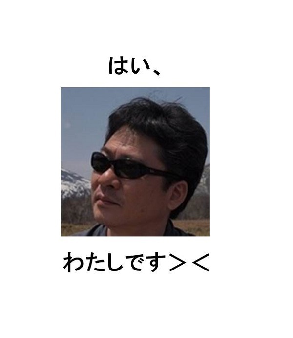
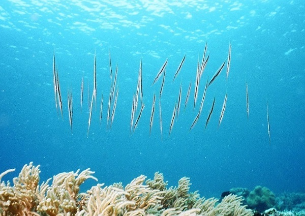
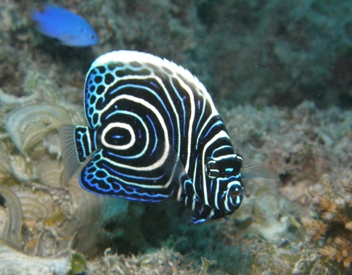
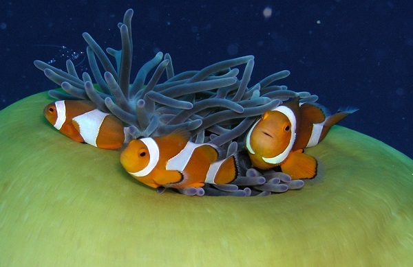
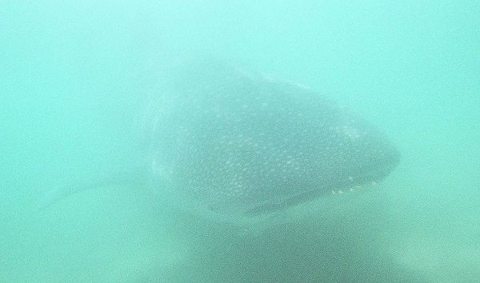
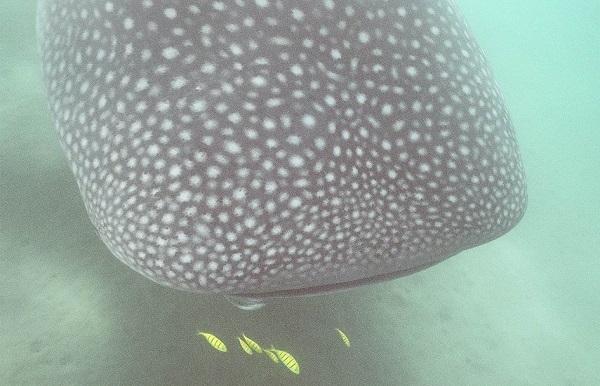
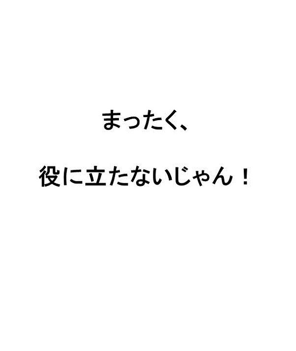
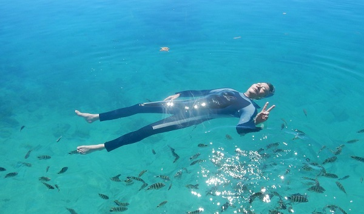

| さるでもわかるダイビング用語集: 酸素ボンベ？ マイナス浮力？ 謎だらけの「ダイビング用語」を面白おかしく解説した爆笑用語集！ | |
| 海河童 | |
| umikappa hompo (2016) | |
『さるでもわかるダイビング用語集』を手に取っていただき、誠にありがとうございます。
「はじめまして」の方もいらっしゃると思いますので、まずは、自己紹介をいたします。わたしはダイビングをはじめて２１年、経験本数８００本、ダイビングが大好きな海
河童
こと、５０代のおっさんダイバーです。そして、この本にも登場するこざるとは、海河童のバディで、やはり５０代のおばさんダイバーです。
ダイビングの世界には、ダイビングを知らない方からすると、「マイナス浮力」とか「タテキンヨーギョ」のように、何のことやら、想像すらできない用語があふれています。
本書では、そんな謎だらけのダイビング用語の中から５０個を選び出して、面白おかしく解説をしてまいります。
これからダイビングをはじめようと思っている方は、Ｃカード講習のときの、筆記テスト対策の参考書として、また、すでにダイバーとなっている方は、ダイビングのことを知らない友人、知人に、ダイビング用語を説明する際のバイブルとして、本書をご活用いただけると幸いです。
さて、本題に入る前に、少しだけ、寄り道にお付き合いください。
海河童は、わたし自身が実際にダイビングをしてきたスポットについて、それぞれのダイビングスポット毎に、ひとりのレジャーダイバーとしての視点で、ダイバーにとって本当に役に立つ情報をお届けしようと、『だからダイビングは』というシリーズ本を、キンドルから出しております。
ただし、わたしのメモリー容量の限界（老年性痴ほう症の前ぶれとも言います）から、何年も前に行ったダイビングスポットについては、なかなか、１冊の本としてまとめ上げることができなくて、「うー、あの海も、この海も、みなさまにご紹介したいのに」と、悔しい思いを抱いておりました。
そんなある日、久しぶりに本屋でダイビング雑誌を立ち読み（買えよ！）しているときに、「そっか、雑誌みたいに、いくつかのポイントをまとめて紹介すればいいんだ」と思い付きました。
さっそく、海河童が２１年間で訪れたことがあるダイビングスポットの中から、わたし自身が、「いつかは、もう一度、行ってみたい」と思っている海について、ご紹介をする本を書きはじめたのですが......。
なにぶん、あやふやな昔の記憶を辿
って書いていますので、それぞれのポイントについて、１冊の本としてお買い上げいただけるほどの詳しい情報をご提供することができません。
とはいえ、せっかく書き上げた本です。やはり、少しでも多くのダイバーの方に読んでいただきたいという思いから、この本を、『だからダイビングは』シリーズのお試し版という位置付けにして、みなさまへの「無料特典」
とさせていただくことにしました。
無料特典のお申し込み方法は簡単です。この下のメールアドレスをクリックすると、宛先に海河童のメールアドレスが入った送信メールが立ち上がります。件名には、すでに、「無料特典希望（Ｙ）」と書かれていますので、そのまま、送信ボタンをポチッと押すだけです。
とはいえ、「はじめまして」の方からすると、海河童がどんな文章を書いているのか、果たして、それが読むに値 するのかも分からない状況で、「無料特典」が欲しいかどうかの判断はできませんよね。
ということで、寄り道が長くなりましたが、まずは、次ページ以降の、『さるでもわかるダイビング用語集』をお読みいただいたうえで、「無料特典」のお申し込みをご検討くださると幸いです。
本書でご紹介する最初のダイビング用語は、「Ｃカード（シー・カード）」です。
ダイバーの方からすれば、「そこからかい！」と思われるかも知れませんが、ダイビングを知らない方からすると、こんな単語すらわからないものです。
以下は、海河童とダイビングのことを知らない友人との会話です。
「ねえ、ねえ、海河童のダイビングのライセンスって、Ｃ級なの、Ｂ級なの、それとも、Ａ級なの？」
「むむむむ......」
......どうやら、わたしの友人は、ダイビングには、「Ｃなんたら」というものが必要だということは、知っているようです。
しかし、その「Ｃなんたら」のことをライセンスだと思い込んでいるうえに、モータースポーツの世界のように、ダイビングのライセンスにも、Ａ級ライセンス、Ｂ級ライセンス、Ｃ級ライセンスと、レベルによって違いがあるのであろうと、大いなる誤解を抱いているようです。
こういう質問に対しては、「ダイビングのＣカードというのは、免許とかライセンスのようなものではなくて......」というところから、説明をする必要があります。
しかしながら、そもそも、ダイビングにはライセンスが必要だと思い込んでいる相手に対して、そこから説明をするのは、正直、面倒なことです。
さらに、わたしは、すべての会話が、ボケとツッコミで成り立っている「大阪」で、多感な青春時代を過ごした人間です。ついつい、相手の誤解を逆手にとって、面白おかしく、話を脚色してしまう傾向があります。
「もちろん、国際Ｃ級ライセンスだよ！」
「へぇー、すごいね！」
「すごいでしょう？ 国際ライセンスだから、世界中のどこで潜ってもいい免許なんだよ」
「でも、Ｃ級ってことは、やっぱり、ＢとかＡとかもあるの？」
「当然、あるよ。Ｂ級はガイドができる免許で、Ａ級はインストラクターができる免許で、このレベルはダイビングを仕事にしている人が持っている免許なんだよ」
「へぇー、そうなんだ」
ということで、みなさまの周りのダイビングを知らない方で、Ｃカードのことを「国際Ｃ級ライセンス」だと誤解している方がいたら、それは、海河童のせいです、ごめんさない。
ここからは、真面目な話に戻しますが、実は、ダイビングの世界には、国や行政のような何らかの公的機関が発行するライセンス、つまり、医師免許や運転免許証のようなものは存在しません。
Ｃカードとは、「民間のダイビング指導団体」が、その団体が行った講習の受講者に発行する「Certification Card（認定証）」の略語です。つまり、ライセンスというよりは、受講証明書のようなものです。したがって、ダイバーが持っているＣカードは、決して、ライセンスとは呼びません。
しかしながら、公的なライセンスではないとはいえ、ダイビングをする際に必要なものではない、ということではありません。
Ｃカードとは、「この人はダイビングに関する知識があって、その技能を習得しています（つまり、この人にダイビングをさせてもだいじょうぶですよ）」ということをダイビングの指導団体が証明するものです。したがって、Ｃカードを提示しないと、どのダイビングサービスでもダイビング※を受け付けてくれません。さらには、ダイビングに最も必要なタンク（後ほどお話をしますが、酸素ボンベではありません）を貸してもらうことすらできません。
※体験ダイビングは例外として、ＣカードがなくてもＯＫです。
Ｃカードを発行しているダイビングの指導団体としては、有名なところとして、ＰＡＤＩ（パディ）、ＮＡＵＩ（ナウイ）、ＳＳＩ（エス・エス・アイ）、ＣＭＡＳ（クマス）等があります。
海河童が持っているのはＰＡＤＩのＣカードですが、まあはっきりいって、どの指導団体でも講習内容に大差はありません。また、よほどマイナーな指導団体でない限りは、どの指導団体のＣカードでも世界中のダイビングサービスで通用します。
「オープン・ウォーター」とは、直訳をすると「開放水」となってしまい、なにやら、新興宗教団体が信者に高額な値段で売り付けている怪しげな健康飲料水のような名前ですが、これは、ダイビングのＣカードを発行している指導団体のひとつ、ＰＡＤＩの「オープン・ウォーター・ダイバー・コース」の略語となります。
「オープン・ウォーター・ダイバー・コース」とは、ダイビングをはじめるに当たって、最初に受講すべきコースとなり、このコースを受講して取得したＣカードを、「オープン・ウォーター」と呼びます。
「オープン・ウォーター」のＣカードは、ナイトダイビングは不可、などの条件は付きますが、最大１８メートルの深度までのレジャーダイビングが許される、いわば、ダイビングの入門コースのＣカードとなります。
ＰＡＤＩ以外の指導団体では同クラスのＣカードのことを、「スクーバダイバー」とか、「１スターダイバー」などと呼んでいますが、コピー機のことをゼロックス、粘着テープのことをセロテープ、と呼ぶように、ダイビングの世界では、「オープン・ウォーター」が、そのまま、一般名詞として使われています。
「アドバンス」も、ダイビングの指導団体のひとつであるＰＡＤＩの講習コースのことで、「アドバンスド・オープン・ウォーター・ダイバー・コース」の略語となります。
また「オープン・ウォーター」と同様に、ＰＡＤＩ以外の指導団体は違う名称を使っているにも関わらず、ダイビングの世界では、一般名詞として「アドバンス」が使われています。
「オープン・ウォーター」と「アドバンス」の違いは、大きくは次の２点です。
１：水深３０メートルまでダイビングができる。
２：ナイトダイビングができるようになる。
ちなみに、ＰＡＤＩの場合は、アマチュアダイバーとしての講習は、「アドバンスド・オープン・ウォーター・ダイバー・コース（ＡＯＷ）」の後は、「レスキュー・ダイバー・コース（ＲＥＤ）」があり、最後に「マスター・スクーバ・ダイバー・コース（ＭＳＤ）」と続きます。
しかし、拙著『さるでも選べるダイビング器材』にも書いていますが、「レスキュー」や「マスター」まで取ったとしても、「オープン」から「アドバンス」に変わったときほどの、具体的なメリットは一切ありません。
したがって、普通にダイビングを楽しむのであれば、ナイトダイビングができて、水深３０メートルまで潜行することができる、「アドバンス」のＣカードまで持っていれば、じゅうぶんです。
ショップやサービスによっては、「ステップアップ」と称して、しきりに、次から次へと講習をオススメするところがあるようですが、ダイビングの「ステップアップ」は、どの講習を受けたかではなく、ダイビングの経験本数に比例しますので、やんわりとお断りするようにしましょう。
ダイビングを知らない方とダイビングの話をしていると、思わず絶句するような質問を受けることがあります。
たとえば、こんな感じです。
「海外でダイビングをするときって、器材を全部、自分で持って行くんですか？」
「うーん、現地でレンタルすることもできるけど、普段、使い慣れた自分の器材の方が安心なので、わたしは、全部、持って行きますよ」
「えー！ じゃあ、酸素ボンベも持って行くんですか？」
「むむむむ......」
......どうも、ダイビングを知らない方は、ダイバーはタンクも個人で所有していると思っているようです。あんな重い物まで自分で持って行ったら、どうやりくりをしても、航空会社が定める手荷物の重量制限を超えてしまいます。
こういう質問をされると、「そもそも、あれは、ボンベじゃなくてタンクと言って、しかも中身は酸素じゃなくて......」というところから説明をしないといけません。
またもや、大阪人のサービス精神がむくむくとわき上がってきてしまうわたしは、Ｃカードのときと同様に、こんな風に答えてしまいます。
「もちろん、酸素ボンベも持って行きますよ」
「へー、たいへんですね？」
「たいへんもたいへん、１週間で３０本は潜りますから、酸素ボンベも３０本持って行きます！」
冗談はさておき、ダイビングでダイバーが背負っているのは、ボンベではなくてタンクと呼びます。また、タンクの中に入っているのは酸素ではなく、地上の空気をギューッと圧縮した、２００気圧前後の空気です。
２００気圧もの圧縮空気をタンクに詰めるためには、コンプレッサーという特殊な機械が必要となります。したがって、わたしたちダイバーは、２００気圧の圧縮空気※が詰まったタンクを、ダイビングのたびに、ダイビングサービスから借りて使っています。
※最近では、通常の空気より、酸素濃度を少し高くした「エンリッチド・エアー」という特殊な空気を詰めたタンクもあります。
余談ですが、タンクに入っている２００気圧の圧縮空気とは、どのくらいの量だと思いますか？
なんと、霞が関ビル１個分、なーんてことはなく、おおよそ、公衆電話ボックス１個分の空気だそうです。（霞が関ビルをたとえに使うあたりで、わたしの年齢がバレバレですね）
「海河童さんって、ダイビングをはじめてから何年くらい経つのですか？」
ダイビングの経験をこういう風に質問された瞬間に、わたしたちダイバーは、（あー、この人はダイビングのことは知らないんだな）とわかってしまいます。
「海河童さんって、今まで何本潜られました？」
同じダイビングの経験を問う質問でも、こう言われると、（おっ、この人もダイバーなんだ！）と、いきなり仲間意識を感じてしまいます。
なぜなら、ダイビングの世界における経験は、「ダイビングをはじめてから何年」という時間の長さよりも、「今までに、何回潜ったことがあるのか」というダイビングの回数を重視するからです。
そして、通常のダイビングでは、１回のダイビングで１本のタンクを使用することから、回数の代わりに本数でダイビングの経験を表現することになります。
自分自身を振り返ってみると、５０本でようやく初級者ダイバーを脱して、１００本を超えると、なんとか一人前のダイバーになったかな、という感じです。
とはいえ、記念すべき８００本目のダイビングで、ウエイトを付け忘れてバックロールエントリーをするような、うっかりダイバーもいます。
えっ、そんなうっかりものは、誰だって？
えっと、えっと、えっと......、

縁起 を担 ぐことが大好きな日本人ダイバーは、５０本目とか、１００本目などのダイビングを「キリ番ダイビング」と呼んで、特別扱いをいたします。
「このダイビングがちょうど１００本目のダイビングなんです」
ダイビングの前に、他のダイバーがキリ番ダイビングを宣言した場合は、たとえ初対面であったとしても、「おめでとうございます！」と祝福をしてあげるのが礼儀になっているほどです。
ダイビングサービスによっては、Ｃカードの提出と同時にログブックの提示を求めるところもあります。ログブックを見ることによって、ダイバーのダイビング経験を正しく把握
する目的以外に、実は、キリ番ダイビングのチェックも行っています。
自分のサービスでのダイビング中に、キリ番ダイビングをするゲストがいる場合、ガイドが水中スレート（水中で文字を書いたりする磁気式のノートのことです）にお祝いメッセージを書いて、それと一緒に記念撮影をしてあげたり、ダイビング終了後に「賞状」のようなものを贈呈
したり、誕生日のお祝いのようにケーキを用意したりと、いろいろな方法でお祝いをしてくれます。
ちなみに、わたしの５０本目、１００本目のキリ番ダイビングは、いずれもダイビング馬鹿が集う島、シパダン島でのダイビング中でのことでした。
ということで、シパダン島の魅力を１冊にまとめた『だからダイビングはやめられない２：シパダン編』、アマゾンにて、好評発売中です。（何だよ、結局、自分の本の宣伝かよ！）
ダイビング用語の中には、ダイビングを知らない方にとっては、まったくもって、理解不能
な言葉もあります。
たとえば、わたしたちダイバーがなんの違和感もなく日常的に使っている、「マイナス浮力」や「中性浮力」といった言葉です。
そもそも「浮力」とは、古代ギリシアの天才数学者アルキメデスが、風呂場で発見したと習いました。そのアルキメデスの原理とは、簡単に言うと、「流体中の物体は、その物体が押しのけた流体の重さ（重力）と同じ大きさの浮力を受ける」ということです。って、ぜんぜん、簡単な説明になっていません。
まあ、とにかく、浮力は浮力です。（簡単に説明できなかったので、開き直っています）
しかし、わたし自身もダイビングをはじめるまでは同じでしたが、ダイバーではない方からすると、「浮力＝水に浮く」以外の何物でもありません。マイナス浮力とか中性浮力とか言われても、頭の中は？マークだらけで、まったく理解ができません。
今回は、わき目も振らず、一直線に説明をしますが、わたしたちダイバーは、普通の方が浮力と考えている「水に浮く浮力」のことを、「プラスの浮力」と呼んでいます。
「プラスの浮力」は水に浮く浮力ということですから、今さら、説明は不要だと思いますので、「マイナスの浮力」と「中性浮力」についてご説明をいたします。
まずは、「マイナスの浮力」についてですが、水に浮く浮力が「プラスの浮力」ですから、「マイナスの浮力」とは「水に沈む浮力」のことです。
水に沈むのに、それも浮力と呼ぶこと自体が矛盾しているような気がしますが、「反対の反対は賛成なのだ」というバカボンのパパのありがたい教えに従うと、水に沈む浮力は、「マイナス浮力」となります。
ということは、「中性浮力」がどういう浮力かは、もうおわかりですね？ そうです、「水に浮かぶこともなく、沈むこともない浮力」のことです。
ダイビング中、快適に水中を移動するためには、ダイバーは、この「中性浮力」であることが大切となります。これは、初級者ダイバーが真っ先に、会得
しなければならないダイビングスキルでもあります。
ちなみに、人間の浮力はどうなのかと言うと、人体の比重は個人差がありますが、だいたい、０.９２～１.０６だそうです。海水の比重は１.０３ですから、１.０３を境に、それより比重の小さな人は浮いて、大きな人は沈むことになります。太めの方は浮いて、やせ気味の方は沈むということですが、まあ、ほんのわずかな比重の違いなので、ほとんどの人は、「中性浮力」だと言っても構わないかと思います。
しかし、ダイビングの器材をぜーんぶ装着した状態のダイバーは、特に、ウェットスーツの影響を大きく受けて、かなりのプラス浮力になってしまいます。
ということで、わたしたちダイバーは、ウエイトという鉛の玉を使って、自分の体が中性浮力になるように調整をいたします。
また、カメラを水中に持って行くときには、ハウジングといった防水の容器にカメラを入れるのですが、カメラとハウジングのすきまには空気が入ってしまいます。したがって、全体としては、プラス浮力になってしまうことがあります。そうすると、水中でカメラが浮いてしまいますので、扱いづらくて困ります。そういうときも、ハウジングに専用の小さなウエイトを付けて、ほんの少しだけ、マイナス浮力になるように調整をします。
本章でご紹介するダイビング用語は、「オクト」です。正式にはオクトパスと言いますが、何でも省略して呼ぶのが好きな日本人ダイバーは、普通は、略して「オクト」と呼びます。
オクトパスとは、英語のOctopus（タコ）が由来になっており、英語のOctopusは、「８本足を持つもの」という古代ギリシア語が由来になっています。由来の由来までしつこくたどりましたが、そのこと自体には、実は、深い意味はありません。
それでは、ダイビング用語の「オクト（オクトパス）」とは何かというと、予備のレギュレーター装置のことを言います。しかし、ダイバーでない方には、レギュレーターという単語から説明をする必要がありますね。
レギュレーターとは、ダイバーが水中で口にくわえて息をしているあの装置のことです。タンク（ボンベじゃないですよ）から伸びたホースの先についている、握り拳サイズの器材です。
ダイバーは、自分のレギュレーターが故障したときや、他のダイバーのレギュレーターが故障したとき、あるいはエア切れ（タンクの空気が無くなること）を起こしたときのために、「予備のレギュレーター＝オクト」を持つことが推奨
されています。
推奨などと微妙な表現を使ったのは、義務化されているわけではないからです。とはいえ、ほとんどのダイバーはオクトを持っていますし、レンタルの器材にも、必ずオクトは付いています。
そして、ほとんどのオクトは黄色となっています。なぜなら、オクトが必要になるときとは、ダイバーにとって「呼吸が出来ない」という命にかかわる緊急事態だからです。すぐさま、目に付いて、手に取って、呼吸を再開しなければならないという、いわば、パニック寸前の状態で使用する器材となっています。
しかしながら、レギュレーターが故障するということは、滅多
に起こることではありません。というか、あってはならない大事故です。
したがって、オクトの使われ方としては、エア切れを起こしたダイバーが、ガイドや他のダイバーのオクトを使わせてもらうということが、ほとんどのパターンです。
わたしたちダイバーは、「おれのオクトからエアを吸う時は、一息、１０円だからね」などと、よく冗談を言ったりしますが、万が一、エア切れを起こしたときは、一息、１００円、いやいや、１０００円を払ってでも、オクトを借りるしかありません。
初級者ダイバーだったときのわたし自身を含めて、ゲストダイバーがガイドのオクトを借りるシーンはたまに見かけますが、ガイドがゲストダイバーのオクトを借りたシーンは、今まで一度しか見たことがありません。ガイドがゲストダイバーより先に、エア切れを起こすなんてことは、ガイドにとって、屈辱
以外の何ものでもありません。
ということで、そんな屈辱のシーンも書かれている『だからダイビングはやめられない４：ゆかいな仲間たち編』、アマゾンにて、好評発売中です。（何だよ、またもや、自分の本の宣伝かよ！）
バブル絶頂期のマスコミ関係の業界人は、「シータクでザギンに行って、チャンネーとシーメーした（タクシーで銀座に行って、おネエちゃんとご飯した）」などと、チャラチャラした業界用語を使っていましたが、「チャンバー」とは「婆ちゃん」の業界用語が由来となっています。
スミマセン、嘘です。そんなわけはありません。
ダイビング用語の「チャンバー」とは、「再圧チャンバー」のことで、再圧チャンバーとは、減圧症になってしまったダイバーの治療装置のことです。
ダイバーでない方には、減圧症から説明をしないとわからないと思いますが、減圧症とは、簡単に言うと、「体内に溶け込んだ窒素が気泡になってしまい、様々な障害を起こす症状」ことです。
減圧症になってしまったダイバーは、このチャンバーという治療装置に入って、高圧力をかけてもらって、気泡になってしまった窒素を再び体内に溶け込ませます。そして、今度は、徐々に圧力を下げることによって、窒素を体外に排出させるのです。
ダイバーにとって、減圧症とは大変おそろしい症状です。したがって、減圧症になってしまってチャンバーで治療することを、わたしたちダイバーは、「島流し」のようなニュアンスで、「チャンバー送り」と表現するほどです。
「チャンバー送り」になることは不名誉であると同時に、大変、危険なことでもありますので、決して、「シータクでザギンに行って、チャンバーとシーメーした（タクシーで銀座に行って、お婆ちゃんとご飯した）」などと、軽々しく、口にできることではありません。
まずは、成田空港におけるダイバー同士の会話と、それを横で聞いている普通の人の感想をお聞きください。
ダイバーＡ：「しまった、大根を持ってくるの忘れた！」
ダイバーＢ：「えー、大根、忘れたの？」
普通の人：（なにこの人たち、空港で、大根を忘れたって、意味が分からない）
ダイバーＡ：「ど、ど、ど、どうしよう？ 今から取りに帰って、間に合うかな？」
ダイバーＢ：「えー、ムリムリ、そんなことしたら、飛行機に乗り遅れちゃうよ」
普通の人：（えっ、そんなに大切な大根って、いったいどんな大根？）
ダイバーＢ：「しょうがないから、パラオでレンタルしたらいいじゃない」
ダイバーＡ：「そっか、レンタルすればいいんだ」
普通の人：（大根をパラオで借りる？ ますます意味が分からない）
ダイバーＡ：「でも、大根のレンタル代っていくらぐらいなのかなー」
ダイバーＢ：「たしか、１日１０００円くらいだったと思うよ」
ダイバーＡ：「えー、じゃあ、１週間で７０００円もするじゃない、あー、しまったー」
普通の人：（１日１０００円もするなら、パラオで大根を買えばいいじゃない、変な人たち......）
最後までスレ違いをしてしまっていますが、実は、ダイバーＡが忘れてしまったのは、野菜の大根ではありません。
何でも省略するのが大好きな日本人ダイバーは、ダイブコンピューターのことも省略して、ダイコンと呼びます。（発音もイントネーションも、まったく大根と同じです）
最近は、安全管理のため、ほとんどのダイビングサービスでは、ダイコンを持っていないダイバーは潜らせてくれません。したがって、ダイコンを持っていない、あるいは、ダイコンを忘れてしまった場合は、現地のダイビングサービスでレンタルをする必要があります。
ということで、成田空港で、ダイバーが先ほどのような会話を交わしていたとしても、
「あのー、大根なら、練馬大根でよろしければ、たまたま、３本持っていますので、１本お分けしましょうか？」
と、親切に、練馬大根を進呈しても、ダイバーはがっかりするだけなので、やめておきましょう。（そもそも、誰が、成田空港で練馬大根を３本も持っているのでしょうか？）
ダイビングをはじめる前に、もし、「ダイマス」という単語を聞いたら、海河童の場合は、きっと、「ダイナミーック、ダイクマー！」と、ヤマダ電機に吸収合併されてしまったディスカウント店を思い浮かべたことかと思います。
しかしながら、ダイビング用語の「ダイマス」は、「ダイクマ」とはまったく関係がありません。
何度も書いていますが、日本人ダイバーは言葉を省略するのが大好きです。したがって、「ダイマス」とは、当然ながら、「大きな升
」を省略した言葉です。
ダイビングでは、水中での呼吸用に、タンク（しつこく言いますが、ボンベじゃないですよ）に空気（本当にしつこいですが、酸素ではありませんよ）を詰めて使うのですが、そのときに、５０センチ四方の大きな升を使って、量を測りながら、空気をタンクに詰めます。
「お客さーん、今日は、タンクに空気、どのくらい詰めておきます？」
ダイビングの前には、ダイビングサービスのスタッフが、必ず、タンクに入れる空気の量を聞いてきます。
「そうですねー、わたしはダイマス（大きな升）５杯分、お願いします」
「次は、浅瀬のダイビングですから、わたしはダイマス２杯で結構です」
といった感じで、ダイバーは、空気を入れる升の数で、タンクに詰めて欲しい空気量をオーダーすることになります。
ゴメンなさい、大嘘です。
ダイマスとは、ダイビングの資格の一種で、ガイドをすることができる資格「ダイブ・マスター」を省略した言葉となります。
また、タンクに詰める空気は、高圧の空気となりますので、「酸素ボンベ？」の章でご説明したように、コンプレッサーという機械を使って、空気を圧縮しながら詰めることになります。当然、入れる空気の量を升で測る、という話も大嘘ですので、信じないでくださいね。
「カンカンボウ」と聞くと、人生経験の豊富なお方（お年寄りともいいます）であれば、「あー、昔、お爺
ちゃんとかがかぶっていた、あのツバの幅がせまい麦わら帽子のことね」と、頭に「カンカン帽」の絵が浮かんでくるかと思います。
しかし、ダイビング用語の「カンカンボウ」は、ボウはボウでも「帽」ではなくて、「棒」のことです。つまり、「カンカン棒」となります。
正式には「指示棒」といって、ガイドがゲストダイバーに見せたい魚などを指し示すために使う道具です。しかし、それ以外にも、水中でゲストの注意を引くときに、タンクを叩いて「カンカン」と音を鳴らすことから、通称「カンカン棒」と呼ばれています。
実物は、４０～５０センチの金属の棒に、紛失防止のためのコイルスプリング付のフックが付いていたりします。
で、この「カンカン棒」ですが、ガイドだけのモノかというと、そうでもなく、わたしたち、ゲストダイバーにとっても、大変、役に立つ道具となります。
たとえば、珍しい魚や、大物を見つけたときなどは、一緒に潜っている他のダイバーにも教えてあげることは、ルールではありませんが、ある種のマナーとなっています。そんなときは、カンカン棒を持っていれば、タンクをカンカンして教えてあげることができます。
また、流れが激しいときに使う、ロープの先に付いたかぎ状の金具を岩などに引っかける「カレントフック」というダイビングの道具がありますが、海底が砂地の場合は役に立ちません。そういうときは、カンカン棒を砂地に突き刺すと、カレントフック代わりにもなります。
ということで、いろいろと役に立つ「カンカン棒」ですが、使い方を誤ると、それこそ文字通りに相手をカンカンに怒らせてしまうことになるので、注意が必要です。
たとえば、海河童が愛して止まない「シパダン島」では、カンカン棒を鳴らしても良いのは、ギンガメアジかバラクーダの群れが出たとき、あるいは、ハンマーヘッドシャークかマンタが出たときのみです。（もちろん、ルールではありませんが、暗黙のマナーです）
普通の海では、カメが出ると、盛大にカンカン棒でタンクを叩くのですが、いたるところにカメがいるシパダン島では、カメが出たといって「カンカン」すると、「なんだよまったく、カメごときでカンカンするんじゃない！」と、ギンガメアジやバラクーダの群れを期待していたダイバーに叱
られてしまいます。
わたしたちゲストダイバーがカンカン棒でタンクを叩くときは、その場の「空気を読む」ことが大切です。
また、遠くにいるダイバーの注意を引くときは、タンクを叩きますが、近くにいるダイバーの注意を引くときは、体をツンツンと突いて使うことから、「ツンツン棒」とも呼ばれます。
「カンカン棒」はちょっと怒っている感じがしますが、「ツンツン棒」と呼ぶと、やや控えめな感じがします。ただし、両者を合わせて「ツンカン棒」とは呼びませんので、ご注意ください。（「ツンカン棒」と呼ぶと、ちょっとツンケンしている感じになりますね）
スノーボードの愛好者は、ボード、ビンディング、ブーツを、和装の関係者は、浴衣、帯、下駄を、それぞれ、３点セットと呼ぶようですが、ダイバーにとっての３点セットとは、いったい何のことでしょう？
「ダイビングといえば、海のレジャースポーツだから、海に必携なのは、水着、日焼け止め、サングラス？」
うーん、惜しい！（ぜんぜん、惜しくないです）
「じゃあ、水中で息をするのに、絶対に必要となる、タンク、レギュレーター、ＢＣジャケット？」
考え方は悪くないと思いますが、違います。
「だったら、ダイビングサービスで提示が求められるＣカードとログブック、そして、持っていないと潜らせてくれないダイコン？」
おっ！ たしかにそういう考え方もありますが、それも違います。
あまり焦らしてもいけませんので、正解を書きますが、ダイビングの３点セットとは、マスク、フィン、シュノーケルの３つです。
この３つを、どうして３点セットと呼ぶのかは、たとえばボートダイビングをしているときの、以下の会話例をお読みくだされば、おわかりになると思います。
ガイド：「２本目のダイビングまでの間は、島に上陸して休憩します」
ゲスト：「器材は、ボートにそのまま置いていってもいいですか？」
ガイド：「はい、いいですよ」
ゲスト：「じゃあ、休憩時間にシュノーケリングで遊ぶから、３点セットだけ持って行こうっと」
つまり、マスクとフィン、シュノーケルを「３点セット」と呼ぶのは、シュノーケリングをするときに、最低限必要となるアイテムが、その３つとなるからです。
ダイビングを知らない方にとって、これは、聞き慣れない言葉だと思いますが、漢字にすると「面積同意書」となり、円の面積はπ ｒの２乗であることに同意をすることです。
スミマセン、またもや、大嘘です。
正しくは、「免責同意書」と書き、わたしたちダイバーが、ダイビングサービスでファンダイビングをする際に、Ｃカードの提出に加えて、「必ず」、しなければならないことが、この「免責同意書」への署名となります。
では、免責同意書にはどういった文言が書かれているかというと、ダイビングサービスによって言い回しは若干違いますが、要約すると、次のような内容となります。
「ダイビング中に発生した傷害や損害について、インストラクター、ガイド、ショップ、ダイビング指導団体へは、責任の一切を問わないことを承諾し、同意します」
つまり、「免責同意書」に署名をするということは、簡単に言うと、「万が一、ダイビング中に事故（死亡事故含む）があっても、誰を訴えることもなく、泣き寝入りをすることに同意します」という、屈辱的、かつ、全面的な「権利の放棄」を認めることです。
ダイビングサービス側からすると、「なんかあっても、こっちは一切、責任取らないからね」という、「責任放棄の宣言書」のようなものです。
どうして、こんな不平等条約のようなものに署名を求められるのかというと、ダイビングとは、海中という非日常的な環境で行われる「自己責任」のレジャースポーツだからです。したがって、何か事故があった場合でも、その原因を、ダイビングサービス側だけに押し付けるわけにはいきません。
なーんてことは、わかってはいますし、仕方がないといえば仕方ないのですが、わたしたちダイバーは、あまりにも一方的な内容の書式に署名をさせられることになります。
しかも、ダイビングサービスによっては、ごていねいにも、
「レンタルしたダイビングの器材についての免責同意書」
「ボートダイビングの場合は、利用するボートに関する免責同意書」
「潜る地域が国立公園だったりすると、そのための免責同意書」
と、何枚も何枚も、うんざりするほど、署名を求められることがあります。
そもそも、ダイビングの前で、ワクワク、ドキドキしているときに、免責同意書に書かれているような、あーんな細かい文字をいちいち読んだりするダイバーは誰もいません。さらに、わたしの場合は、老眼鏡をかけないことには読めません。
もうこうなったら、いっそのこと、
「すべての免責同意書に同意するという免責同意書」
というものを用意してもらって、その一枚に署名すれば済むようにして欲しい！ と開き直るダイバーは、海河童だけでしょうか？
ダイブコンピューターをダイコン、ダイブ・マスターをダイマスと、何でもかんでも省略してしまう傾向がある日本人ダイバーは、「残暑で暑い」ことを、「残暑 」ではなく「残暑 」と呼び、このように使います。
「いやー、今年は残暑
だから、９月になっても、ダイビングから上がった後、寒くないから、いいねー」
「ホント、ホント、残暑
さまさま、ですね」
またまた、嘘です、ゴメンなさい。
ダイビングではタンク（ボンベではありません）に、２００気圧前後の高圧の空気（酸素ではありません）を詰めて、レギュレーターという特別な器材を使って水中で呼吸をします。
したがって、ダイビング中にタンクの中に、どのくらいの空気が残っているのかを知っておくことは、非常に重要なことです。そのために、レギュレーターには圧力計というものが付いています。
その圧力計に表示されている気圧が、その時点での「タンクに残っている空気の圧力」となり、この「タンクに残っている空気の圧力」のことを「残圧
」と呼びます。
ダイビング開始時点の使用前のタンクの圧力と、終了時点、つまり、使用後の「残圧」をログブックに記録することで、自分の空気の使用量がわかることになります。
当然、長く潜れば潜るほど、残圧は減りますが、深く潜れば潜るほど、空気の減り方も早くなりますので、ダイビングの後には、こんな会話が交わされます。
「いや～、さっきのダイビング、安全停止のときに、残圧が３０しかなくて、焦ったよ」
「仕方ないよ、深場でギンガメアジを追っかけたからね」
わたしたちダイバーは、いざというときのために、安全停止のときには、５０気圧以上の残圧が残っていることが推奨されていますので、このような会話になるわけです。
前章でご紹介した「ざんあつ」が「残圧」であったことから、何でも省略してしまうダイバーが「ざんたん」というからには、それは「残ったタンク」の略であることは、すぐにおわかりになると思います。
つまり「ざんたん」とは「残タン」と書き、ダイビング終了後の使用済みタンクのことを指します。
たとえば、海河童が初めてマンボウを見たのは、伊豆の漁師さんのいけすの中でした。この話は『だからダイビングはやめられない４：ゆかいな仲間たち編』にも書いていますが、２本のボートダイビングを楽しんだ後の帰りの船上で、船長さんから「マンボウを見せてあげようか？」と言われました。
しかし、船にはダイバーの人数分の予備のタンクはありません。
「えー、でもタンクが無いですよ」と、海河童が言うと、「だいじょうぶさ、残タンで潜ればいいっさ」と言われ、ボートダイビングで使った「残タン」を使って、いけすの中でダイビングをしました。
通常のダイビングをするときには、空気がフル充填 された２００気圧前後のタンクを使うのですが、ダイビングの時間が短くて、浅いところで潜るときは、このように、例外中の例外として、「残タン」を使って潜ることがあります。
ちなみに、ダイビングをはじめたばかりのころの海河童は、エアの消費量が多かったので、器材をセッティングした後の圧力チェックのときは、「どうか、たくさんエアが入っているタンクでありますように」と、祈るような気持ちでタンクのバルブを開けていました。
しかしながら、圧力が１８０気圧に満たないタンクを引き当てたときは、そのタンクを「空気が少なくて残念なタンク」という意味で「残タン」と呼び、ガックリとうなだれていました。
そんな海河童の初級者ダイバー時代の悪戦苦闘を１冊にまとめた、『だからダイビングはやめられない１：悪戦苦闘編』、アマゾンにて好評発売中です。（おいおい、またもや、自分の本の宣伝かよ！）
本章では、ダイビング用語ではありませんが、ダイバーならではの、ダイバーにしかわからない、プチ自慢合戦について解説をいたします。
以下は、ファンダイビングからエキジットした後のダイバー同士の会話です。
Ａ：「いやー、さっきのダイビング、安全停止に入るときに残圧が３０しかなくて、焦ったよ！」
Ｂ：「えっ、おれなんか、８０も残っていたよ」
Ｃ：「ふーんだ、わたしなんか９０だもんねー」
Ａ：「Ｃは女性だからだし、おれなんか、最大水深が３５メートルだったんだから、しょうがないだろう」
残圧とは、前々章で解説しましたが、ダイビング終了後のタンクに残っている空気圧のことです。
残圧が少ないということは、ダイビング中にタンク内の空気を多く消費したということで、逆に、残圧が多いということは、空気の消費量が少なかったということになります。
一般的に、初級者ダイバーほど空気の消費量が多い傾向があり、残圧が多い方が上級者ダイバー（＝ダイビングテクニックが上）というイメージから、ダイビングの終了後には、先ほどの会話のように、どれだけ残圧があるか、「残圧自慢」が行われることがあります。
ただし、Ａさんが最後に反論をしていたように、空気の消費量は、ダイビング中の深度にも影響を受けますし、体の大きさにも比例しますので、一概に、残圧が多い＝上級者ダイバーということでもありません。
また、「残圧自慢」以外にも「深度自慢」と言って、やたらと最大水深の深さを自慢したがるダイバーもいます。しかしながら、最大水深が深ければ深いほど、当然、ダイビング中の危険度は増すことになります。
間違っても「深度自慢」をしたいがために、わざと深く潜るようなことはやめておきましょう。
「ブリーフィング」とは英語の「briefing」からきており、一般英語では「概況説明」とか「作業指示」といった意味で、軍隊英語では、戦闘開始直前の「簡潔
な指令」といった意味です。
このことから、ダイビングの直前にガイドがゲストダイバーに対して行う説明を、わたしたちダイバーは「ブリーフィング」と呼びます。実際の雰囲気としては、軍隊英語の「簡潔な指令」に近い感じです。
ブリーフィングの内容は、今から行うダイビングについて、
①
ポイント名と概況説明（地形や海流の状況）
②
予定している潜水時間と最大深度
③
エントリー直後の集合場所の指示(水面？ 水中？)
④
潜降方法の指示(フリー？ ロープ伝い？)
⑤
ポイントで見られる海中生物の説明
⑥
ガイドに申告すべき残圧数の指示
⑦
水中ではぐれたときの対処法
その他、ポイントにまつわる特別な注意事項や、ハンドシグナルの再確認などを行います。
このように、ブリーフィングとは、ガイドからゲストダイバーへ行われるものですが、ブリーフィングを聞くことによって、逆に、ゲストダイバーはガイドの力量を値踏みしたりもします。
特に、⑤
のポイントで見られる海中生物の説明が具体的で明確な場合は、そのポイントでのダイビング経験の豊富さを意味しますので、信頼がおけるガイドだと言えます。
とはいえ、あまりにも長過ぎるブリーフィングは、ゲストダイバーに嫌われたりしますので、ブリーフィングを行うガイドも難しいものです。
ちなみに、あまりにも長いブリーフィングをすることから、海河童が「校長先生」と呼んでいたコモドクルーズのガイドの話も載っている『だからダイビングはやめられない４：ゆかいな仲間たち編』、こちらもアマゾンにて好評発売中です。（あらまあ、またもや、自分の本の宣伝かよ！）
ダイバーではない方が、「安全停止」と聞くと、「あー、それなら知ってる、知ってる♪ 自動車を運転しているときに、信号のない交差点などで、事故に遭わないように止まることでしょう？」と思われるかもしれませんが、それは「一時停止」です。
ダイビングで水中に潜っていると、深く潜れば潜るほど、長く潜れば潜るほど、呼吸をした際の空気に含まれる窒素が血液内にたくさん溶けていきます。
で、そのまま、急浮上をしてしまうと、その窒素が体内で気泡化してしまって、「減圧症」というたいへん危険な症状を引き起こしてしまいます。
ただし、段階的に水面に向かって上昇をすれば、ゆっくりと窒素は体外に排出されていきますので、正しいダイビングをしているかぎりは問題ありません。
それでも、わたしたちダイバーは、安全に安全を期して、水深５メートルのところで３分間の停止をして、体内から窒素が排出されるのを待つことになります。
この水深５メートルでの３分間の停止のことを、「安全停止」と呼びます。
水中という特別な世界でダイビングを楽しんだ後に行う、陸上生活に戻るための「おごそかな儀式」のようなものです。
ガイドや上級者ダイバーになると、水深計やダイコンの深度表示を見ることもなく、ピタッと水深５メートルで、静止をするように安全停止をしますが、初級者ダイバーの場合は、沈んだり浮いたり、浮いたり沈んだりと、なかなか水深５メートルをキッチリとキープすることができません。
安全停止とは、ダイバーのレベルが如実
にわかってしまうときでもあります。
まずは、ダイビング終了後のダイバー同士の会話をお聞きください。
「いやー、さっきのダイビングはデコが出ちゃってさー」
「深場でハゼを撮るために粘っていたからでしょう？」
ダイバーではない方からすると、「深場でハゼを撮っていると、おでこが出るの？」と、首を傾げることになるかと思います。
しかし、ダイバーが言っているのは、「デコ」はデコでも「おでこ」のことではなく、「Decompression(減圧）」のことを、またもや省略をして「DECO（デコ）」と言っているのです。
前章の「安全停止」の解説でも書きましたが、ダイビングで水中に潜っていると、深く潜れば潜るほど、長く潜れば潜るほど、呼吸をした際の空気に含まれる窒素が血液内にたくさん溶けていきます。
通常のダイビングでは、ゆっくりと水面に浮上することによって、水圧が下がるにつれ、体内の窒素は徐々に排出されていくのですが、規定された時間よりも長い間、深いところに潜っていると、ゆっくりと水面に浮上するだけでは、排出が間に合わないほど窒素が体内に溶けてしまいます。
その状態を「Decompression(減圧）」が必要な状態と呼び、安全停止とは別に、ダイコン（ダイブコンピューター）の指示に従って、浅い深度で数分から数十分程度、待機して、窒素を排出しなければなりません。
これを減圧停止と呼び、ダイバーは「デコが出た」と表現します。
ダイビングサービスによっては、デコが出たダイバーは、次のダイビングを強制的にキャンセルさせるところもあるほどです。本来は、安全のためにも、デコを出さないのがレジャーダイバーの基本です。
ダイビングで船に乗っていると、船長さんとボートマンが「スタボー」とか「ポート」と言っていることがあります。これらはダイビング用語というよりは船員用語ですが、ダイバーとして、知っておいても損のない用語です。
海河童は、大学生のころ、教授たちが共同で所有していたヨットのクルーをしていたことがあります。そのときに、先輩クルーから教えてもらったのですが、船の進行方向の右側を「スタボー」、左側を「ポート」と呼びます。
「スタボー」は「スターボード・サイド」、「ポート」は「ポート・サイド」という英語を省略したものです。
しかしながら、どうせ英語で言うのであれば、右は「ライト」、左は「レフト」と素直に呼ぶか、どうしても省略したいのであれば、右は「ラ」、左は「レ」とすればいいのに、どうして「スタボー」とか「ポート」などと呼ぶのでしょうか？
そのわけは、スターボード・サイドの「starboard」とは、「steering board」が変化した言葉で、つまり「舵
側」という意味になります。
昔は、船の中心に舵をつける技術がなかったため、舵は船の右側についていたそうです。そのために、船の右側が「スターボード・サイド」と呼ばれました。
そして、舵が右側に付いていた当時は、船を桟橋に付けるときは、船の左側を接岸せざるを得ませんでした。ということで、左側が港側になりますので「ポート・サイド（port side）」となりました。
その当時の名残で、今でも船の右側は「スタボー」、左側を「ポート」と呼ぶようになっているのです。
ちなみに、今でも、船を接岸するときは、基本的には、左側を付けることになっています。
さらに、うんちくを垂れながすと、昔は「飛行船」と呼ばれていた飛行機でも、この用語は同様に使われています。飛行機の搭乗口が左側「ポート・サイド（port side）」にあるのも、実は、この名残なのです。
みなさまも、船に乗っているときは、右を「スタボー」、左を「ポート」と呼ぶと、ちょっと通っぽくて、カッコいいので、ぜひ、使ってみてください。
前章で「スタボー」と「ポート」のお話をしましたが、本章でご紹介する「バウ」と「スターン」も船員用語となります。
こちらは、とっても簡単で、「バウ」は英語の「bow（船首）」で、「スターン」も英語の「stern（船尾）」から来ています。
もちろん、この用語は、飛行機でも同様に使われています。
この２つの用語も、船に乗っているときに、船首のことを「バウ」、船尾のことを「スターン」と呼ぶと、これまた、通っぽいので、ぜひ、使ってみてください。
これで、船員用語を使って、船の前後左右を言いあらわすことが出来るようになりました。
しかしながら、「こんなことを覚えても、いったい、どういうときに使うんだよ？」とお思いでしょうが、たとえば、ボートに乗って移動中に、右舷
側の海面にイルカを見つけたら、「ドルフィン、スタボー！」と叫んで、船長やボートマンに知らせてみましょう。
船長さんが、素早く、イルカの方に舵を切ってくれます。
さらに、うんちくを垂れながすと、もっと正確に、イルカがいる方向を知らせたい場合は、「バウ（船首）」を時計の文字盤の１２時として、時間を使いながら方向を言いあらわします。
たとえば、斜め右前方にイルカがいる場合は、「ワン、オクロック」とか「ツー、オクロック」となり、反対側の、斜め左前方にいる場合は、「イレブン、オクロック」とか「テン、オクロック」となります。
時計の文字盤をイメージしながら伝えると、より正確に、方向を知らせることができるようになり、船長やボートマンに一目置かれるようになること、請け合いです。
ダイビングは、老若男女の区別なく、万人が楽しめるレジャースポーツです。
ということは、海河童のようなサラリーマンだけではなく、お殿様であっても楽しめるレジャースポーツとなります。
つまり、「殿様ダイビング」とは、読んで字のごとく、お殿様が何人もの侍従
や家臣
を引き連れて、大名行列のようにやってくるダイビングのことです。
またまた嘘です、ゴメンなさい。
「殿様ダイビング」とは、東南アジアのダイビングサービスなどでよく見られるダイビング形態で、器材のセッティングから、エントリー＆ エキジットのサポートまで、まさに、至れり尽くせりのサービスをしてくれるダイビングのことを指します。
「殿様ダイビング」を提供してくれるダイビングサービスでは、たとえば、ボートダイビングの場合、お殿様であるダイバーは、自分の器材を持つこともなく、ウェットスーツだけを着用してボートに乗り込みます。
ダイビング器材は、すでに、スタッフの手によって、ボートの上に積み込まれています。それどころか、ＢＣジャケットやレギュレーターは、やはり、スタッフの手によって、タンクにセッティングされた状態になっています。
ゆうゆうと乗船したお殿様は、自分の器材がちゃんとセッティングされているかどうか、タンクの空気圧が正常値を示しているかどうかを確認するだけです。
やがて、ボートがエントリーポイントに到着をすると、スタッフがＢＣジャケットをタンクごと持ち上げて、お殿様が着用し易いように手伝ってくれます。また、お殿様がカメラを持っている場合は、何も言わずとも、エントリーをした後に、ボートの上から優しく手渡してくれます。
そして、殿様ダイビングの殿様たる由縁
は、エキジット時のサポートで、最大限に発揮
されます。
水面に浮上したお殿様がボートの横に張られたロープにつかまると、船の上からスタッフが手を伸ばして、まずはカメラ、次にウエイト、さらにはＢＣジャケットごとタンクを、最後はフィンまで、ボートの上に引き揚げてくれます。
マスクとシュノーケルだけになったお殿様は、身軽な状態で、ラダーを使って船に上がるだけです。タンクの付いたＢＣジャケットを着たまま、ウエイトも付けたまま、カメラ片手に船に上がるのとは雲泥
の差です。
さらには、ダイビングが終了して港に戻ると、スタッフが器材をボートから降ろして、水洗いまでしてくれます。
このように、まさに「上げ膳、据え膳」のダイビングのことを、わたしたちダイバーは「殿様ダイビング」と呼びます。
しかしながら、初級者ダイバーのときの海河童は、実は、「殿様ダイビング」が苦手でした。
たんに、わたしが貧乏症なので、そんな過剰なサービスに慣れていないという理由ではありません。
そのころのわたしは、器材のセッティングもあやふやな状態で、「ダイビングをする、イコール、器材のセッティングを自分でして覚える」というレベルでした。
器材のセッティングまでしてくれることは、セッティングを覚えるチャンスを取り上げられる、つまり、有難迷惑だったのです。
今は？ もちろん「殿様ダイビング」大歓迎です。
ちなみに、エントリー＆ エキジットを、屈強なスタッフが「お姫様だっこ」をして手伝ってくれる、「お姫様ダイビング」というのは、未だに見たことがありません。
ダイビングとは、ひと言でいうと、海という大自然の中で遊ばせてもらうレジャースポーツです。しかしながら、自然は、人に優しいときばかりではありません。それどころか、命にかかわるほど、厳しい顔を見せることもあります。したがって、ダイバーは、自然のコンディション、特に海況に気をつかいます。
一方、お天気に関しては、たとえ雨が降っていたとしても、どうせ海の中に入ればびしょ濡れですから、ダイバーは雨を厭
うことはありません。
ただし、もちろん、雨が降っていない方が嬉しいので、曇っているときは、雨が降らないように、特別なお祈りをする習慣があります。
そのお祈りのことを「曇り止め」と呼びます。
ダイバーならではのお祈りの作法は、漫画の中で、カエルが蓮
の葉を傘代わりにするように、フィンを２枚、傘代わりに頭に乗せて、「雨が降りませんように、雨が降りませんように、雨が降りませんように」と、おごそかに３回唱えます。
そうやって、曇天に向かって、雨が降らないように、「曇ったままでいてください」という気持ちを、「曇り止め」という祈りの儀式で大自然の神様に捧げるのです。
ごめんなさい、またもや、嘘です。
そんなことをしているダイバーは、当然のことながら、ひとりもいません。
「曇り止め」とは、ダイビング中にマスクが曇ってしまうことがあり、それを防ぐために、エントリーの前に行うことです。
具体的には、曇り止め専用の液体や、台所用の中性洗剤をマスクの内側に塗ってから、ダイビング中に目が沁
みないように、海水で洗い流して終了です。
専用の液体や中性洗剤がない場合は、自分の唾液を「ペッペッ」とマスクの内側に吐きかけます。
ということで、シュノーケリングで同じボートに乗ったダイバーが、ダイビングの前に、マスクに唾を吐きかけていても、「汚～い」なんて、毛嫌いをしないでくださいね。
「マスクスクイズ」とは、ダイビングの創始者であるフランス人「マスクス」が、ダイビングの正しい知識の普及のために作成した「クイズ」のことです。
すべてのダイバーはＣカード講習の際に、このクイズに全問正解することが求められるほど、ダイバーにとっては常識ともいえるクイズとなっています。
なーんてことはありません。またまた大嘘です。
「マスクスクイズ」とは、「Mask Squeeze」という英語をカタカナ読みした言葉です。
「Mask」はダイビングで使う「マスク」のことで、「Squeeze」は「押しつぶす」という動詞ですから、「Mask Squeeze」とは「マスクが（顔を）押しつぶす」という意味になります。
どうして、そんな恐ろしいことが起きるのかというと、ダイビング中に変化する水圧が原因です。
エントリーをする前のマスクの中には、大気圧（＝１気圧）の空気が入っています。陸上では、外側の圧力も同じ大気圧ですから、何の問題もありません。しかし、水深を下げるにしたがってマスクの外側の圧力（＝水圧）は増えていきます。
たとえば水深１０メートルの水圧は２気圧となりますので、２気圧（マスクの外）－
１気圧（マスクの中）＝１気圧分の圧力で、マスクが顔にぎゅ～っと押し付けられることになります。
そのまま放っておくと、顔が痛くなってきますが、これを解消する方法は、いたって簡単です。鼻から息を出すだけで、マスク内の圧力が高まって、周囲の水圧と平衡
が取れるようになります。
しかしながら、意外とこのことを知らないダイバーも多くて、特に、初級者ダイバーほど、ダイビングが終わってマスクを外すと、マスクスクイズのせいで、顔にマスクの跡がキッチリと付いていたりします。
ちなみに、水泳のゴーグルは鼻を覆 っていないので、鼻からゴーグル内に息を出すことができないため、ダイビングで使うことはできません。
さらに、ちなみに、ダイビングの創始者は「マスクス」という人ではなく、日本でも放映された「クストーの海底世界」に出演していたフランス海軍の元大佐、ジャック・イヴ・クストーだと言われています。
ガイドに引率されてのファンダイビングでは、ビーチダイビングでもボートダイビングでも、エントリーのときは、みんなで「水面集合」をしてからの潜行で、浮上後も、みんなで「水面集合」をしてからのエキジットが基本となります。
海の表面と中では、潮の流れの「向き」や「速さ」が違うことがありますので、一度、水面で集合をしてから、次の行動に移ることで、チームがバラバラにならないようにします。
例外としては、流れもなく海底に目印となる集合場所がある場合は、「エントリーをしたら、ボートの真下にある、水深５メートルの根の上で集合です」とか、アンカーを打っているロープ沿いに潜行する場合に、「ローブ沿いに潜行して、アンカーの周辺で集合です」などど、特別な指示があるときもあります。
しかし、そういった指示が無い場合は、特に「水面集合」と言われなかったとしても、「水面集合」することが基本となっています。
ダイビングをはじめてみようと思うみなさまは、「８時だよ、水面集合！」と覚えておきましょう。（って、おいおい、古過ぎるだろう）
サーファーであれば、いい波が立っている海を眺めているだけで、気持ちよーく、酔ったような気持ちになるという意味で、「波酔い」という言葉を使うそうですが（使いません！）、ダイバー用語の「波酔い」とは、そんな風雅
なことではありません。
ダイビング用語の「波酔い」とは、読んで字のごとく、波に揺られることで、「船酔い」のように、気持ち悪くなってしまうことです。
ガイドに引率されてのファンダイビングでは、潜行前も浮上後も「水面集合」が基本であると、前章でご説明しました。この「水面集合」をしているときに、ちゃぷちゃぷと波に揺られていると、他のダイバーを待っている間に「波酔い」になってしまうことがあります。
一般的に「波酔い」を防ぐにためには、エントリーや浮上を最後にするようにして、できるだけ水面集合時間を短くすることが有効な方法となります。
とはいえ、あまり他のダイバーを待たせるのも、マナー違反となりますので「待たせ過ぎ」には、ご注意ください。
海河童のバディであるこざるは、お酒はたくさん飲ませないと、なかなか酔わないくせに、船酔いにはめっぽう弱いので、この「波酔い」にもしょっちゅうやられます。
したがって、わたしたちは「波酔い」防止のため、流れもなく、水中の透視度もいいときは、水面集合ではなく、水面下５～１０メートルくらいの中層で、他のダイバーを待たせてもらうことにしています。
もちろん、これは事前にガイドに了解をもらうことと、そういった特例を認めてもらえるだけのスキルがあることが前提となります。
釣り用語として使われる「撒き餌」は、魚を仕掛けの近くに寄せるために使われる、「寄せ餌」と同義語で、オキアミなどがよく使われるそうですが、ダイビング用語の「撒き餌」で使われるのは、残念ながら、ちょっとお下品なものになります。
前章でご紹介した「波酔い」や、あるいは、船酔いで、気持ちが悪くなってしまったダイバーが、ゲーゲーしてしまったそのものを「撒き餌」と呼ぶからです。
小魚たちにとっては、実は、ゲーゲーも、なかなかのご馳走
となります。南の海で「撒き餌」をすると、オヤビッチャやチョウチョウウオなどのカラフルな小魚が大量に集まってきます。
その様子は、一見、綺麗ではありますが、当のダイバーは苦しくて、苦しくて、それどころではありません。
ダイビング中に撒き餌をしないためには、乗り物酔いをしやすい方は、ビーチダイビングであっても、「波酔い」防止のために、酔い止めの薬を服用しておくことをオススメします。
この道のプロであるこざるに聞いてみたところ、エスエス製薬の『アネロン』という酔い止めの薬が効果的だそうです。
本章でご紹介するダイビング用語は「チェック・ダイビング」です。
これは、「チェック・ダイブ」と略して使われることもありますが、初めて訪れたダイビングサービスでダイビングをする際に、最初に行うダイビングのことです。
わたしたちのようなレジャーダイバーは、ガイドやインストラクターのように、毎日ダイビングをしているわけではありません。１か月ぶりや２か月ぶりどころか、１年ぶりにダイビングをする、なーんてことも、多々あります。
ダイビングは自転車と同じように、あるレベルにまで到達すれば、体が覚えているものですが、それでも久しぶりにするダイビングは、ちょっと不安になるものです。
そのために、耳抜きが上手くいくかどうかなどの体調や、ダイビング器材のチェック、ウエイト量の確認・調整、さらには、自分のダイビングスキルの再確認などを、「チェック・ダイビング」の際に、各自、チェックをすることになっています。
しかし、チェックをしているのは、ダイバー本人だけではありません。実は「チェック・ダイビング」を引率しているガイドこそが、ゲストダイバーの様子をチェックしています。
器材のセッティングの様子から、水中での中性浮力の取り方、安全停止の状態などを、ガイドはしっかりとチェックをして、ゲストダイバーのスキルを見極めています。そうやって、ゲストダイバーのスキルを把握したうえで、チーム編成や、ポイント選びの参考にしています。
空気の消費量が早い初級者ダイバーは、この時点で、キチンとその旨
をガイドに伝えておくことが大切です。
本章でご説明するダイビング用語は、海河童が大好きな「無制限ダイビング」です。
こちらも「チェック・ダイビング」が「チェック・ダイブ」と略されることがあるように、「無制限ダイブ」と言われることもあります。
「無制限ダイビング」とは、プロレスのそれが、「本日のメインイベントは、無制限１本勝負ー♪ 」とアナウンスされるように、時間制限なしで雌雄 を決する勝負と同じ意味です。つまり、タンクのエアがなくなるまで、何時間でもダイビングをしてもいいという、たいへん、太っ腹なダイビングのことです！
スミマセン、またまた嘘です。
ダイビング用語で言うところの「無制限ダイビング」とは、１日に２本、もしくは３本のガイド付のファンダイビングとは別に、好きなときに無料でタンクを借りて、バディ同士で自由気ままに潜ってもいい、というダイビングシステムのことです。
つまり、時間制限なしの「無制限」ではなく、１日の本数制限がない「無制限」となります。
多くの場合は、ダイビングサービスの目の前に、バディダイビングに適した「ハウスリーフ」があるところで、このような「無制限ダイビング」のサービスが受けられるようになっています。
もったいないことが何よりも嫌いな海河童は、せっかくダイビング旅行に行くのであれば、期間中は、１本でも多く潜りたいと思うわがまま者です。
ガイド付のファンダイビングとは別に、少なくとも、早朝ダイビングとサンセットダイビングの２本は追加で潜りたいと思っています。したがって、ダイビング旅行の行き先を検討するときは、この「無制限ダイブ」をさせてくれるかどうかが、大きなポイントとなります。
無制限ダイビングができるところで、バディダイビングをするときは、ダイビングサービスのホワイトボードに、「エントリー時間」「ダイバーの名前」「エキジット予定時間」を書くようになっています。
これは、いわば、「登山届」のようなもので、エキジット予定時間になってもダイバーが戻って来ない場合は、ダイビングサービスのスタッフが捜索
をしてくれることになっています。
もし、そういったホワイトボードが無い場合は、必ず、ダイビングサービスのスタッフに、「○○時にはエキジットする予定です」と、ひと声かけてから、バディダイビングに出かけるようにしましょう。
本章でご説明するダイビング用語は、前章の「無制限ダイビング」の説明で出てきた「ハウスリーフ」です。
「ハウスリーフ」とは、バーモントカレーで有名なハウス食品株式会社が提供しているリーフのことで、ピリッと香辛料が効いているかと思うと、リンゴとハチミツの絶妙なブレンドのお陰で、お子様がシュノーケリングでも楽しめるリーフのことです。
スミマセン、またまた、嘘です（そんなことは、すぐわかりますよね）。
「ハウスリーフ」とは、ダイビングサービスの目の前のビーチや、すぐ近くにある桟橋の下などにあるダイビングポイントのことです。
「ハウスリーフ」の多くは、流れもさほどないことから、「チェック・ダイビング」や、「無制限ダイビング」のポイントとして使われます。
通常、「ハウスリーフ」は、ビーチの近くや桟橋の下となっていますので、基本は、小物中心のマクロな海となります。
ところが、海河童がお気に入りのマタキン島の「ハウスリーフ」は、ギンガメアジの若魚の群れや、はぐれバラクーダがいたりと、ワイドでも楽しめる素晴らしい「ハウスリーフ」です。
そんなマタキン島の魅力を１冊にまとめた、『だからダイビングはやめられない３：マタキン編』、アマゾンにて、好評発売中です。（何だよ、またもや、自分の本の宣伝かよ！）
「ヨーヨーダイビング」とは、読んで字のごとく、ダイビングをしながら、水中で「ヨーヨー」をすることです。似たようなダイビングとしては、他にも、「ケンダマダイビング」とか、「フリスビーダイビング」などがあります。
スミマセン、ダイビング中にそんなことをするダイバーはいません。
ヨーヨーは、糸の先の玉を上下に振る遊びですが、ヨーヨーダイビングとは、この糸の先の玉のように、ダイビング中に、浅いところと深いところを行ったり来たりするダイビングのことです。
ダイビングでは、減圧症を防止するため、初めに深いところに潜ってから、徐々に、水深をあげていくのが基本となります。
しかしながら、中性浮力が上手に取れない初級者ダイバーの場合は、ダイビング中に浮いたり沈んだりしてしまうことが多々あります。そういうダイビングを揶揄
して、「ヨーヨーダイビング」と呼びます。
したがって、「あなたのダイビングは、ヨーヨーダイビングですね」と言われることは、大変、不名誉なこととなりますので、注意しましょう。
ちなみに、「ヨーヨーダイビング」を英語で言うと、「sawtooth dive」となります。「sawtooth」は、ノコギリの歯という意味ですから、ノコギリの歯のギザギザのように上下するということです。
血圧の高いダイバーは、食事の注文のときには、必ず、「塩分、少なめでお願いします」とお願いするほど、塩分の摂
り過ぎに気を使っています。
そして、何でも省略するのが好きな日本人ダイバーは、「塩分、少なめでお願いします」という表現を、短く、ひと言に略して、「塩抜き」と言います。
たとえば、「塩ラーメン、塩抜きでお願いします」と、オーダーをします。（だったら、そもそも塩ラーメンを頼むなよ、なーんて突っ込みはナシですよ）
またまた、嘘です。（このパターンは、もう飽きたと言わないでくださいね）
ダイビングの器材は海水（＝塩水）に浸かっても、さびたりしないような素材で作られていますが、ダイビングの終了後にそのまま放置していると、付着した海水の塩分が固まってしまって、可動部分が動かなくなってしまうことがあります。この状態を「塩噛
み」と言います。
この「塩噛み」を防ぐために、ダイビング終了後は、ダイビング器材一式を、しばらくの間、真水に浸ける必要があり、これを「塩抜き」と言います。
ダイビングサービスでは、この「塩抜き」用に、真水の桶
などを用意してくれていますが、帰りの支度
などを考えると、そこでは完全に「塩抜き」ができません。
ということで、海河童の場合は、帰宅後に、風呂桶に水をためて、半日ほど、器材一式を真水に浸してから、干すようにしています。
これは、結構な手間がかかりますが、器材を長持ちさせるために必要な作業となります。
むかし、むかし、あるところにおじいさんとおばあさんが住んでいました。
ある日のこと、おじいさんが山に柴刈りに、おばあさんが海にダイビングに行くと、おばあさんの目の前を漂流ダイバーが「どんぶかー♪
どんぶか♪
」と流れていました。
レスキューの資格を持っていたおばあさんが、その漂流ダイバーを岸まで曳航
して助け上げると、息を吹き返した漂流ダイバーは、助けてもらったお礼にと、ＢＣジャケットのポケットから取り出した玉手箱をおばあさんに手渡しました。
おばあさんが家に帰って、ことのてんまつをおじいさんに話して、お礼にもらった玉手箱を取り出すと、おじいさんが斧でまっぷたつに！
すると真っ白な煙と共に、玉手箱の中から出てきたのは、なんとも可愛らしい人魚でした。
おじいさんとおばあさんに大切に育てられた人魚は、やがて、すくすくと成長し、「どんぶか姫」と呼ばれる絶世の美女に育ちました。
どんぶか姫は......、
おーい、誰か止めてくれー！
スミマセン、関西人特有の「ひとりボケ、ひとり突っ込み」をしてしまいましたが、「どんぶか」とは、決して、「どんぶか姫」のことではなく、海底が見えないほど深い海のことを指すダイビング用語です。
ダイビングでは中性浮力をとることが大切ですが、特に、このような「どんぶか」の海では、注意が必要です。
海底があれば、いくら沈んでも底で止まりますが、「どんぶか」の海では、果てしなく沈み続けてしまいます。
「どんぶか」の海では、キチンと中性浮力をとるように気をつけましょう。
本章でご説明するダイビング用語は「透視度」です。
「透視度？ それって、透明度のことじゃないの？」
はい、これはダイバーであっても間違うことが多いのですが、ダイビング中に海中で、どれくらい視界があるのかを言うときは、正しくは、「透明度」ではなくて、「透視度」と言います。
「透明度」とは、水面から水底方向に垂直に何メートル先まで見えるかであり、一方の「透視度」とは、水中で水平方向に何メートル先まで見えるかをあらわす用語となります。
一般的に、１５～２０メートルの透視度があれば、かなりいい方で、伊豆の海あたりでは、季節にもよりますが、まあ、１０メートル前後が普通の状態です。
透視度が５メートルを切ったりすると、ダイバーは「ニゴニゴの海」と呼んだり、さらに透視度が悪いときは、「味噌汁のような海」と形容します。
サイパンやグアムなど、ミクロネシアの海は、「透視度」が非常によいことが多く、ときには、３０メートルを超えることもあります。
このくらい、透視度がいいときにダイビングをすると、まるで空を飛んでいるかのような爽快
な気分になりますが、高所恐怖症のダイバーの場合は怖くなることもあるようです。
とはいえ、わたしも含めて、ほとんどのダイバーは、日常的には、透視度のことを透明度と言っていますので、「透明度」という単語を使った方が、通りがいいかもしれません。
ダイブコンピューターをダイコン、ダイブ・マスターをダイマスと、何でも省略する傾向にある日本人ダイバーは、ＢＣジャケットのことも略して、「ＢＣ（ビー・シー）」と呼びます。
しかしながら、ＢＣジャケットそのものが、そもそも、「Buoyancy Control Jacket＝浮力調整ジャケット（Buoyancy Compensator Jacket＝浮力補償ジャケットとも言います）」の省略形ですから、それをさらに省略するということは、たとえるならば、as soon as possible を「ASAP（アサップ）」と省略したうえに、さらに、アサップをアップとか、サップと省略するようなことです。（ちょっと違うか？）
この調子でいくと、近い将来、わたしたち日本人ダイバーは、ダイコンを「ダコン」、ダイマスを「ダマス」、などと言い出すかも知れません。
１０月も後半になると、陸上は秋も深まってまいりますが、実は、本州沿岸の海は、ダイビングのベストシーズンとなります。
なぜならば、液体である海は固体である陸上とは熱伝導率が違いますので、海の中は、真夏の７月～８月よりも、９月～１０月の方が暖かくなります。
特に、伊豆方面は、夏は海水浴の人たちなどで賑
わって、周辺の道路はたいへんな交通渋滞を起こしますが、９月を過ぎると渋滞も解消されますので、そういった意味でも、ダイビングのベストシーズンと言えます。
そして、その時期は「季節来遊魚」の季節でもあります。
季節来遊魚とは、普段は南の暖かい海に棲んでいる魚たちが、夏から秋にかけての台風や黒潮の影響で、本州沿岸に流されてきたものを指します。
映画「ファインディング・ニモ」で有名なクマノミや、ムレハタタテダイ、チョウチョウウオの幼魚などが季節来遊魚の代表選手となります。
しかしながら、これらの魚たちは、もともとが暖かい海の生き物であるため、冬になると、本州沿岸の海水温に適応ができずに、残念ながら、ほとんどは、越冬することができません。
そのため、かつては「死滅回遊魚
」と呼ばれていたのですが、「死滅」という呼び名はあんまりだということで、いつの頃からか、季節来遊魚と呼ばれるようになりました。
頭を下に向けて、体を縦にした状態でヘコヘコと泳ぐ魚をヘコアユと呼びます。
ヘコヘコと泳ぐ鮎だからヘコ鮎というのではなく、ヘコは「逆さ」、アユは「歩む」を意味していて、逆さに歩くように泳ぐことからヘコアユと呼ばれており、分類学的にはヨウジウオの仲間です。

しかしながら、わたしたちダイバーが「ヘコアユ」と言う場合は、この魚そのものを指す場合と、ある状態のダイバーを指す場合の２種類があります。
どういう状態のダイバーを指して「ヘコアユ」というかというと、それは、まさに頭を下にしてヘコヘコしている状態のダイバーのことです。
「ダイバーって、そーんな変な泳ぎ方をする人がいるの？」
ダイビングを知らない方からすると、不思議に思われるでしょうが、そういうダイバーがいるからこそ、そういう使われ方をするのです。
わたしたちダイバーは、ダイビングの終了前に、５メートルの水深で３分間の安全停止というものをすると、安全停止の章でご説明しましたが、そのときに、ヘコアユになってしまうダイバーがいます。
ダイビングをされない方は、驚かれるかも知れませんが、実は、空気にもちゃーんと重さがあります。
わたしたちダイバーが使うタンクは、ダイビングをはじめるときは２００気圧前後の空気が入っていますが、安全停止をするころには５０気圧前後になっています。
つまり、１５０気圧分の空気が無くなっているわけですが、その１５０気圧分の空気の重さは、なんと、２キロにもなります。
したがって、ギリギリのウエイトで潜っていたり、残圧が５０気圧よりも少なくなるまで潜っていると、安全停止のときにタンクが軽くなり過ぎて、浮いてしまうことになります。
しかしながら、５メートル３分間の安全停止はダイビングの基本ルールです。何とか、５メートルの水深を維持しようとするダイバーは、頭を下にしてフィンキックをしながら、ヘコヘコすることになります。
この状態のダイバーが「ヘコアユ」と呼ばれます。
実際のヘコアユは群れでヘコヘコ泳いでいてゆかいな魚なのですが、安全停止で「ヘコアユ」になってしまったダイバーは、体が反った状態でフィンキックをしなければならないので、腰は痛くなるし、他のダイバーからは笑われるしで、散々な目に遭うことになります。
「タテキンヨーギョ」とは、ダイバーに大人気の魚で、漢字で書くと「縦金妖魚」となります。
どんな魚かと言うと、読んで字のごとく、前章でご紹介した「ヘコアユ」のように「縦になって泳ぐ金色の妖
しい魚」のことです。
またまた嘘です、ゴメンなさい。（このパターンが多過ぎますね、反省しています）
「タテキンヨーギョ」とは、決して「縦金妖魚」などではなく、「タテジマキンチャクダイの幼魚」を略した呼び名となります。
タテジマキンチャクダイとは、青地に綺麗な黄色の縦縞が入っているキンチャクダイの一種ですが、これが、幼魚のときは、あらあら不思議、縦縞ではなく、グルグルの渦巻き模様なのです！

魚の中には、成魚と幼魚で、ずいぶんと色や模様が違うものがいますが、このタテジマキンチャクダイもその例にもれず、成魚と幼魚で大きく見た目が違います。
タテキンヨーギョの渦巻きは成長するにつれ、だんだんとほどけていって、縦縞になっていきます。
「クリーニングフィッシュ」とは、読んで字のごとくなので、解説の必要もないかと思いますが、実は、海の中にも、「白洋舎」に勤めている魚がいます。
スーツ上下は１８００円、ワイシャツ一枚なら３５０円で、預けた翌々日までに、綺麗に洗濯をしてくれる魚たちです。
って、そんな魚、いるわけがありません。
クリーニングフィッシュとは、他の魚の体に付いた寄生虫などをエサとして、ツンツンと突いて掃除をする魚の総称です。
ダイビング中に見ることができる、代表的なクリーニングフィッシュとしては、体長１０センチほどの「ホンソメワケベラ」という魚がいます。
他の魚たちは、ホンソメワケベラを見かけると、掃除をしてもらうために、嬉しそうに近づいてきます。
寄生虫はエラや口の中にも付きますので、大きくエラを広げたり、「あ～ん」と口を開けて、ホンソメワケベラが掃除をしやすいようにしている姿は、見ているこちらも「ほほが緩
むほど」気持ち良さそうです。
普段は小魚を食べてしまう魚であっても、ホンソメワケベラだけは、捕食することはありません。まさに、共存共栄ということです。
しかーし、海の中には、とんでもなくずる賢い魚もいます。
ホンソメワケベラは、頭を斜め下にさげて、くねくねと独特な泳ぎ方をするのですが、姿かたちに、色も模様もそっくりなうえに、この泳ぎ方までマネをする「ニセクロスジギンポ」という魚です。
ニセクロスジギンポは、ホンソメワケベラだと勘違いをした他の魚が、掃除をしてもらおうと近づいてくると、パクッとヒレを食い千切って逃げてしまいます。
いやはや、海中の世界の生存競争も、なかなか、厳しいものがあるようです。
「ゲンコツ」とは、ダイビング用語というよりは、伊豆半島近辺の漁師さんたちが、「サザエ」のことを指して使う業界用語ですが、ダイバーでも知っている方は多いかと思います。
日本沿岸の海は、基本的には、漁業協同組合の関係者のみが、「漁業権（漁業を排他的
に行う権利）」を持っていることになっています。
したがって、わたしたちダイバーは、本来は、ダイビング中に魚を銛
で突いたりすることはできませんし、サザエやアワビ、ウニなどを採ることもできません。
しかしながら、伊豆半島のサザエやアワビの中には、凶暴な性格を持つものもいて、時としてダイバーを襲ってきたりします。そういうときは、仕方なく、嫌々ながらも、わたしたちダイバーは、水中ナイフを使って、戦うしかありません。
さらには、他のダイバーが襲われることのないように、そういった凶暴な奴らを、駆除
と称して、捕獲
して持ち帰るダイバーもいます。
こういった事態のことを、ダイバーは以下のように表現します。
「いやー、今日のダイビングでは、ゲンコツに襲われて、ほとほと、困ったよ」
しかしながら、これを普通の言葉に翻訳をすると、「今日のダイビングで、美味しそうなサザエを見つけたので、ＢＣジャケットのポケットにそっとしまった」という意味になります。
まあ、簡単に言えば「サザエを密漁した」ということです。
このような行為は、本来は漁業権を侵害する違反行為です。いくら凶暴なサザエやアワビに襲われたとしても、駆除をするのは、せいぜい、ＢＣジャケットのポケットの数程度に留めておきましょう。
って、ダメです、ダメです。良い子のダイバーは、駆除はしないで、追い払うだけにしておきましょう。
そんな、凶暴なサザエに襲われた話も載っている、「だからダイビングはやめられない４：ゆかいな仲間たち編」、アマゾンにて、好評発売中です。（おいおい、また、宣伝かよ！）
競泳の世界で「あおり足」というと、平泳ぎの反則泳法のことですが、ダイビングの世界では、通常のフィンキック（バタ足）と並んで、立派な泳法のひとつとなります。
ダイビングの「あおり足」とは、簡単に言うと、ゆっくりとした動作で平泳ぎのように足を動かして泳ぐことです。（ただし、手は使いません）
通常の足を交互に上下するバタ足と比べると、スピードは出ませんが、水を後方に押し出すようにして泳ぎますので、砂地の水底近くを泳いでも、砂を巻き上げることがありません。
また、バタ足の場合は、どうしても体がローリングをしてしまいますが、あおり足の場合は、足の動きが左右対称となりますので、ローリングをすることもなく、体が安定した状態で泳げます。
そして、一番のメリットは、蹴り終わった後の惰性を上手に使うと、省エネな泳法になるということです。
ダイビングをはじめたら、ぜひ、マスターをしたい泳法です。
ガイドがゆっくりと泳いでいるときは、だいたいこのあおり足で泳いでいますので、後ろから観察をしながら、真似をしてみましょう。
ダイバーではない方からすると、まったく謎の言葉だと思いますが、これは、とっても恐ろしい目に遭ったダイバーのことを省略した、ダイビング用語となります。
どのような目に遭ったダイバーのお話かと言うと、「北海道でダイビングをしていて、『１人で浜』に上がろうとしたら、『２頭の熊』が出てきたので、怖くて、怖くて、『３時間』もの間、海の中に『隠れ』ていた」ということです。
スミマセン、またまた、大嘘です。
「１浜２熊３隠れ」とは、正しくは「１ハマ、２クマ、３カクレ」と表記をして、わたしたちが歴史上の出来事の年号を覚えるときに、「１１９２（いいくに）作ろう鎌倉幕府」と語呂 合わせをしたように、クマノミの種類を覚えるときにダイバーが使っている言葉です。
１ハマとは、ハマクマノミのことで、目のすぐ後ろに白いラインが横に１本入っています。
２クマとは、いわゆるクマノミのことで、体に白いラインが横に２本入っています。
３カクレとは、カクレクマノミのことで、体に白いラインが横に３本入っています。
ところで、どうして、いちいち、ラインが「横に」と、しつこく書いていたのかというと、魚の縦縞や横縞は、ダイバー目線では逆に見えるからです。
ためしに、こちらのカクレクマノミの写真を見てください。

一見すると、白いラインが縦に３本、入っているように見えますが、実は、これは、横縞になります。
魚だけではなく、縞模様のある生き物は、頭から尻尾に向かって入っている縞が「縦縞」で、胴体を横切るように入っている縞は「横縞」となります。
つまり、ダイバーが海の中で見るときは、頭を上にして泳いでいる魚※はいませんので、縦横の感覚がずれてしまうのです。
※ヘコアユのように、頭を下にして泳いでいる魚はいます。
ということで、またまた、話が脱線してしまいましたが、
「１ハマ、２クマ、３カクレ」とは、クマノミの種類を覚えるためのダイバー用語でした。
「パイロットフィッシュ」とは、ダイバーにはお馴染 みの用語ですが、ダイビングを知らない方は（一部の方を除くと）、初めて聞く用語かと思います。
ダイビング用語でのパイロットフィッシュとは、マンタやジンベイザメなどの超大型の魚に引っ付いて泳いでいる魚の総称です。
だいたいが、頭の周辺を泳いでいることが多いので、その様子が、まるで水先案内をしているように見えることから、「Pilot＝水先案内をする」魚ということで、パイロットフィッシュと呼ばれます。
これは、文章で説明するよりも、実物を見ていただいた方がわかりやすいと思いますので、まずは、こちらの写真をご覧ください。

ジンベイザメがゆうゆうとこちらに向かって泳いできていますが、よく見ると、先端に何か黄色い点のようなものが見えます。

さらにアップで見ると、先ほどの黄色い点は、小さな魚であることがわかってきます。
この黄色い魚は、コガネシマアジの幼魚ですが、他の種類のアジの幼魚や、スギという魚がパイロットフィッシュになる場合もありますので、パイロットフィッシュとは特定の魚の名前ではなく、こういった大型の魚に付いて泳ぐ小魚の総称となります。
ところで、先ほど、（一部の方を除くと）と書きましたが、それにはちゃんとした理由があります。
実は、同じ「パイロットフィッシュ」という用語を、まったく違う意味で使っている方たちがいます。
その方たちとは、アクアリスト（熱帯魚を飼っている方たち）です。
アクアリストは、新しく水槽を作ったときに、本当に飼いたい魚を入れる前に、中の水質をチェックするために、死んでしまってもいい「安価な魚」を入れて、様子を見るそうです。
つまり、その安価な魚たちのことを、「Pilot＝試験的な」魚という意味で、パイロットフィッシュと呼ぶそうです。
ダイビング用語のパイロットフィッシュは楽しい用語ですが、アクアリスト用語のそれは、ちょっと悲しい用語だと思うのは、海河童だけでしょうか？
ダイビングを知らない方が「オーバーホール」と聞くと、「あー、それなら知ってる知ってる、あの胸当てとサスペンダーの付いたズボンのことだよね」と、早とちりをされるかもしれませんが、それは「オーバーオール（Overall）」で、わたしが言っているのは「オーバーホール（Overhaul）」です。
オーバーホールとは、そもそも、精密機械を部品単位まで分解して清掃してから、もう一度、組み立てて、新品の時と同じ状態に戻す作業のことです。
ダイビングで使っている「レギュレーター」は、タンクに詰まっている圧縮空気を、ダイバーに安定的に供給する大切な精密機械となります。
したがって、わたしたちダイバーは、年に１回はレギュレーターをオーバーホールすることが推奨されています。（推奨ですから義務ではありませんが、自分の安全のためにも、ほとんどのダイバーはこれを実施しています）
とはいっても、素人が自分で行える作業ではありません。ダイビングショップなどを経由して、専門業者に依頼をすることになります。
ダイバーのみなさまはご存知ですが、この「オーバーホール料金」が結構な負担となります。
まずは、分解～清掃～組立の工賃として、だいたい、レギュレーター１セットで１万円前後が基本料金としてかかり、さらには、交換が必要となるパーツ代などが、なんだかんだと加算されて、結局は、１セット当たり、２万円近くの費用がかかることになります。
自分の安全のためには、仕方のないことですが、毎年、毎年、２万円近い出費は痛いところです。
「残留窒素」とは、なんだか「残留孤児」のような名称ですが、ダイバーにとっては大切な用語となります。
今まで、何度か書きましたが、タンクに詰められた圧縮空気を吸いながらダイビングをすると、体内には通常よりも多い窒素が溶け込んでしまいます。ゆっくりと浮上することによって、窒素は徐々に排出されていくのですが、ダイビング終了後の体内には、排出し切れなかった窒素が残ってしまいます。このように、ダイビング終了後に体内に残っている窒素のことを、わたしたちダイバーは、「残留窒素」と呼びます。
「残留窒素」は、陸上にいる間も、徐々に排出されるのですが、１本目のダイビングが終わった直後の残留窒素を、仮に１００とすると、１時間、休憩をしたとしてもゼロにはなりません。
これまた仮に、１００の残留窒素が半分になるとすると、２本目のダイビングの開始時のそれは５０となり、ダイビングの終了後のそれは５０＋１００＝１５０となります。
また１時間休憩をして、残留窒素が半分になるとすると、３本目のダイビングの開始時の残留窒素は７５となります。
実は、ダイビングでは、ダイビング開始時の体内の「残留窒素」の量に応じて、それぞれの水深毎に、潜っていても安全とされる時間が決められています。
つまり、１本目のダイビングは「残留窒素」ゼロ、２本目は５０、３本目は７５をベースにして、潜水計画を立てる必要があります。
かつては、ダイブテーブルという換算表を使って、この潜水計画を自分で計算して組み立てる必要がありました。Ｃカード講習でも習いますが、とっても、とっても、面倒な作業です。
今では、ダイブコンピューターが、ダイバーの「残留窒素」量を計算して、水深に応じた潜水可能時間を、ダイビング中にリアルタイムで表示してくれるようになっていますので、この面倒な作業は不要となりました。
まずは、ダイビング終了後のガイドと初級者ダイバーの会話をお聞きください。
ガイド：「○○さんは、ちょっとオーバーウエイトですね」
初級者ダイバー：「えー、やっぱりそうですか？」
ガイド：「はい、どうみてもオーバーウエイトです。明日は、１キロ減らしましょう」
初級者ダイバー：「わかりました、そうします」
この会話を、ダイビングを知らない方が聞いた場合は、
「いきなり、太り過ぎって言うなんて、なんて失礼な人なの！」
「言われた方も、怒りもしないで納得するなんてどういうこと？」
「しかも、たった１日で、１キロもの減量指示まで出すなんて、ダイビングのガイドって、そんな権限まであるわけ？」
などど、憤慨 なさるかもしれませんが、ダイビング用語の「オーバーウエイト」とは、決して「太り過ぎ」という意味ではありません。
わたしたちダイバーは、中性浮力を取るために、ウエイトと呼ばれる鉛の玉をベルトに通して、そのベルトを腰に巻きつけた状態でダイビングをします。
中性浮力とは、本書の「マイナス浮力と中世浮力」の章でご説明しましたが、水中で、浮きもしないし、沈みもしない浮力のことです。
しかしながら、潜行に不安がある初級者ダイバーは、ウエイトを付け過ぎる傾向にあります。先ほどの会話例に登場した初級者ダイバーは、まさに、ウエイトを多く付け過ぎていたということで、その状態を「オーバーウエイト」と呼ぶのです。
ダイバーにとって、オーバーウエイトには、「砂煙を立てることによる他のダイバーへの迷惑」、「サンゴ礁を蹴ってしまうことによる環境破壊」という２つの罪と、「陸上では重い」、「空気の大量消費による早期退場命令」、「中性浮力が取り難くなること」、「潜行時の墜落」という４つの罰があります。
詳しくは『だからダイビングはやめられない１：悪戦苦闘編』の「オーバーウエイトの罪と罰」の章をご参照ください。（って、結局、宣伝かよ！）
ダイビングを知らない方が「耳抜き」と聞くと、「えー、耳抜きって、耳を引っこ抜くこと？」と驚いてしまうかもしれませんが、そういうことではありませんので、ご安心ください。
海の中は水深が深くなるにつれ、水圧が高くなります。
したがって、深く潜るにつれて、水深１０メートルで、大気圧（１気圧）にプラス１気圧の２気圧、水深２０メートルでは、大気圧にプラス２気圧の３気圧と、陸上の２倍、３倍もの圧力を体中に受けることになります。
この水圧の影響を、もっとも強く受けるところが、「耳」となります。
耳の中は鼓膜
で耳の外側と内側が仕切られていますので、深く潜るにつれて、鼓膜が水圧で外側から押されてしまいます。放っておくと痛みますし、最悪の場合は、鼓膜が破れてしまいます。それを防ぐためには、外からの水圧に対抗をして、鼓膜の内側から圧力をかける必要があります。
そのことを、わたしたちダイバーは、「耳抜き」と呼びます。
「鼓膜の内側から圧力をかける？」
ダイビングを知らない方からすると、「そんなこと、どうやるの？」とお思いでしょうが、実は、簡単にできます。
口を閉じたまま、息がもれないように鼻をつまんで、そのままの状態で、ゆ～っくり、鼻から息を吐き出そうとしてください。耳の中で「バコッ」とか「ガサッ」と、音がしますよね。
これが「鼓膜の内側から圧力をかける」＝「耳抜き」です。
ダイビングをはじめたばかりのころは、まさに、鼻をつまんで「耳抜き」をするのですが、慣れてくると、唾を飲み込むだけでも自然に耳が抜けるようになります。
ということで、「耳抜き」についても解説をしている『さるでもできるダイビング』、アマゾンにて好評発売中です。（おいおい、また、自分の本の宣伝かよ！）
「リバースブロック」とは、英語で書くと「Reverse Block」となり、つまり、直訳すると「逆にふさぐ」ということです。
これは、前章でご説明した「耳抜き」が必要な状況とは逆で、水深を上げるにしたがって、減少していく水圧によって、鼓膜が外側から引っ張られる現象です。
潜行するときは「耳抜き」をすることで、鼓膜の外側と内側の圧力を調整しますが、浮上するときは、通常は、何もしなくても問題はありません。（自動的に調整されます）
しかし、たまーに、自動的に調整されなくて、「リバースブロック」という現象が起こることがあります。耳が痛くなって、ひどいときは頭痛、めまいがしてきます。大体の場合は、早く浮上し過ぎたことが原因ですから、一度、深度を下げてから、再び、ゆっくりゆっくりと浮上をすると収まります。
しかしながら、どうしても「リバースブロック」から抜けられないことも起こります。これは、ハッキリ言って、地獄です。
潜行しようとしている最中に「耳抜き」ができないときは、最終手段として、ダイビングを中止するという手がありますが、「リバースブロック」の場合は浮上しないという手は打てません。浮上しないことには、タンクのエアはどんどんと無くなっていくからです。
ガイドに助けを求めても、エアを分けてもらうことはできますが、リバースブロックを解消してもらうことはできません。
ということで、「リバースブロック」の恐ろしい体験談も入っている『続：さるでもできるダイビング』も、アマゾンにて好評発売中です。（ちょっと、宣伝が、しつこくないか？）
本書の最後にご紹介するダイビング用語は、「水面休息」です。
わたしたちダイバーは海が大好きですから、休息をするときであっても、ビーチチェアに寝転んだりせずに、水面にプカプカと浮かんで休息をします。
本書の「マイナス浮力と中性浮力」の章にも書きましたが、人間の浮力は海水に対しては、ほとんど中性浮力です。
したがって、海面に体を横たえて、ゆっくりと吸い気味の呼吸をすれば、プカプカと浮いた状態で休息することが可能となります。さらには、ウェットスーツを着用すれば、普通の呼吸をしていても、余裕でプカプカと浮かんでいられます。
ということで、ダイビングポイントの近くの海では、あちらこちらに、ラッコのように仰向けになって、ダイバーが浮かんでいる姿が見られます。上級者ダイバーになると、器用にも、水面に浮いたまま本を読んだりもしています。
波の音をＢＧＭに、プカプカと浮かんで本を読んだり、青空を眺めながら、お隣に浮かんでいるダイバーと雑談をしたりと、ダイバーならではの、とっても、平和で穏やかな休息方法です。
ゴメンなさい、最後の最後でも、またもや嘘を付いてしまいました。
「水面休息」とは、「残留窒素」の章でも書きましたが、ダイビング中に体内に溶け込んだ窒素を排出するために、陸上で休息することです。通常は「水面休息時間を取る」という風に使います。
わたしたちダイバーは、ダイビングとダイビングの合間には、少なくとも１時間の「水面休息時間」を取ることが必要とされており、それは、ビーチやボートの上で、休息を取るという意味です。
もちろん、ラッコの様に海面にプカプカ浮かんで休息をしてもいいのですが、そんなことをしているダイバーはあまりいません。（ってことは、いるのか？）
『さるでもわかるダイビング用語集』、お楽しみいただけたでしょうか？
海河童は、本書の冒頭にて、「Ｃカード講習の筆記テスト対策の参考書としても役に立つ......」とか、「ダイビングのことを知らない友人、知人に、ダイビング用語を説明する際のバイブルとして......」などと、大上段に構えましたが、最後までお読みいただいた感想はいかがでしょうか？

はいはい、お叱りごもっともです。
たしかに、冗談や脱線話が多すぎたと反省しております。
当初、この本は、アマゾンで販売をするつもりで書いておりましたが、完成直前にバディであるこざるに見せたところ、
「ムキィー、こんなふざけた本は、ダメー！」
尻尾をぶんぶん振り回しながら、完全にダメ出しをくらってしまいました。
「そ、そ、そうだよな、ちょっとふざけすぎだよな」
しょぼんとうなだれて、販売をすることは諦
めた海河童です。
とはいえ、せっかく書いた本なので、やっぱり、誰かに読んでもらいたいものです。
「で、でもさー、タダならいいんじゃない？ タダなら」
ということで、今回、こうやって、無料本として出版することにいたしました。
無料本とはいえ、実際に本の形でお届けするからには、誤字脱字等があってはならぬと、校正のために読み返してみると、「あんがい、面白いことを書いているじゃないか？」と自画自賛 をした海河童ですが、お読みになったみなさまは、どう思われたでしょうか？
どうか、「ふざけすぎだ！」と目を三角にはなさらないで、ラッコのように、のーんびりと、水面休息をしている海河童に免 じて、笑って許していただけると幸いです。
ほーらね！

さて、最後に、ここからは、独り言のようなことを書かせていただきます。しかも、肩の力を抜いて書きますので、ちょっと、文体も崩れるかと思いますが、ご容赦 ください。（いやいや、今までも、ずいぶんとくだけた文体だったよ、って、あらら、そうでしたね）
本書は、無料本として出していますので、みなさまは、「たまたま、この本を見かけて、しかも、無料
だったので、ポチッとダウンロードをしてみただけだよーん」ということですよね？
いやいや、そのことを、どうこう言うつもりは毛頭ありません。わたし自身、個人作家が出している無料本を、ポチッとダウンロードをしては、無料
で読んでいます。
さらに、そもそも、この本を無料で出すことにしたのは、わたし自身です。
とはいえ、ダイバーでもなく、ダイビングにご興味もない方が、ダイビング用語を解説しているだけの本書を（あれで、解説のつもりだったのか！ というツッコミはなしですよ）、最後までお読みいただいたうえに、こーんな、わたしの独り言にまで付き合ってくださっているとは思えません。
ということは、今、この文章を読んでいらっしゃるあなたは（キョロキョロしないでください、あなたのことです）、すでにダイバーであるか、もしくは、ダイビングにご興味がある方、のどちらかに違いにないと思っています。
つまり、海河童の同志、海を愛する男の中の男、あるいは、海に恋する乙女、のどちらかですよね。
そんな、みなさまを見込んで、海河童から、ひとつだけお願いをさせてください。
ダイバーの方は、お知り合いのダイバーの方に、ダイビングにご興味がある方は、同じく、みなさまの周りでダイビングにご興味がありそうな方に、本書について、
「ちょっとはためになる」とか、
「暇つぶし程度にはなる」とか、
「１０個のうち、１個くらいしか、笑えない冗談ばっかりだけど」とか、
「ホントに馬鹿馬鹿しい本だけど」とか、
「まったくに役には立たないけど」とか、
（書いているうちに、だんだん、悲しくなってきましたので、もうやめることにします）
どんな形容詞を付けていただいても構いませんので、「こんな本が、キンドルから無料 で出ているよ！」 と、本書をご紹介いただけないでしょうか？
また、若い方には、ツイッターやラインとやらで、つぶやいたり、バズったり、あるいはハッシュタグとか、５０を過ぎたおっさんダイバーの海河童にはよくわかりませんが、要は、拡散をしていただけると幸いです。（あっ、くれぐれも、ディスるってやつだけは、やめてくださいね）
そして、最後のお願いです。（おいおい、さっき、ひとつだけって言ってたじゃないか！）
それは、本書の冒頭でもご案内させていただきました、「無料特典」
のお申込みです。
本書のような冗談ばかりの本を書いたわたしが言っても、信憑
性は低いかもしれませんが、無料特典としてご用意している「だからダイビングはやめられない：お試し版」は、ダイバーの方にも、ダイビングにご興味をお持ちの方にも、ちゃーんと役に立って、さらに、楽しんでいただける内容になっております。
論より証拠ということで、「無料特典」の目次をご紹介しますと、
東京から一番近い南国「八丈島」
世界自然遺産の島「屋久島」で海も山も楽しもう！
意外な穴場「サイパン」でグロットに挑戦しよう！
のんびりとした時間の流れ「タオ島」
氷点下の海「ウトロ」
１粒で２度美味しい「メナド」
世界自然遺産の海「ガラパゴス諸島」
憧れのジンベイザメとの遭遇率１００パーセントの海「オスロブ」
懐かしのホームグラウンド「黄金崎ビーチ」
死ぬ前にもう一度行きたい！「シパダン島」
このように、海河童自身が、「もう一度、行きたい」と思っているダイビングスポットを、国内外から１０か所選び出して、ご紹介する本になっております。自分で言うもの面映 ゆいのですが、「無料特典」とはいえ、かなり、読み応えのある本となっております。
「でもさー、無料特典がもらえるからといって、メールアドレスを知らせたりすると、しつこい宣伝メールが、バンバン、送り付けられてくるんじゃないの？」
そんな心配をなさる方もいらっしゃると思いますが、ご安心ください。
海河童は、みなさまと同じ、海を愛する男の中の男です。いただいたメールアドレスには、天地神明
に誓って、無料特典をお送りするときしか......、んっとー、無料特典をお送りするときは当然ですが......、そのー、つまり、無料特典をお送りするときと、（海河童本舗の新刊等のご案内のとき）しか、メールをお送りしないことをお約束いたします！
「おいおい、やっぱり、宣伝メールを送ってくるんだ！」
ごめんなさい、もう、こうなったら、正直にお願いします。
「どうか、宣伝メールも お送りさせてください！」
とはいえ、海河童は、本業は会社勤めのしがない兼業作家です。そんなわたしが新刊本を出せるペースなんて、せいぜい、年に４～５回程度（これも、そのくらい書けたらいいな、という希望的観測）が関の山です。
したがって、誠に残念ながら、みなさまが「迷惑だ」と思われるほど、頻繁
に宣伝メールをお送りすることはできません。どうか、ご心配なさらずに、「無料特典」
のお申し込みをお願いいたします。
無料特典のお申し込み方法は簡単です。この下のメールアドレスをクリックすると、宛先に海河童のメールアドレスが入った送信メールが立ち上がります。件名には、すでに、「無料特典希望（Ｙ）」と書かれていますので、そのまま、送信ボタンをポチッと押すだけです。
※メールソフトが入っていない端末でお読みの場合、または、上記をクリックしても、メールソフトが立ち上がらない場合は、お手数ですが、件名欄に、「無料特典希望（Ｙ）」と記入されたメールを、先ほどの海河童のメールアドレス宛てにお送りください。
いずれの場合も、本文の欄には、何も書かなくても結構ですが、本書をお読みになった感想やご意見などを添えてくださると、今後の本作りの励みになります。
たとえば、「おもちろかったよーん」と、ひと言だけでも添えてくださった方には、飛び跳ねて喜んだ海河童は、感謝感激の言葉を連綿 と書き連ねた挙句 、嬉しさのあまり、無料特典の添付を忘れてしまった「うっかりメール」をお送りさせていただきます。（だから、それが迷惑メールだってば）
あるいは、「あそこのギャグは、まったく笑えませんでした」と、シニカルなひと言を添えてくださった方には、海河童はドーンと落ち込みますので、いつまでたっても無料特典が届かないということになります。（ウソです、ウソです、ちゃんと無料特典はお送りします）
また、こういった空メールを送って無料特典や資料を請求するシステムでは、空メールを送った直後に、すぐさま、無料特典や資料のダウンロードページをご案内するメールが届くようになっていますが、海河童本舗からの返信メールは、１分待っても、５分待っても、それどころか、１時間待っても、たぶん、送られてくることはありません。（おいおい、なんか、開き直っていないか？）
「ちゃんと、届いたのかな？」と、不安に思われるかもしれませんが、ご安心ください。
海河童本舗は、ライターは海河童ひとり、営業も経理も海河童ひとり、つまり、家内制手工業となっております。
無料特典希望のメールに対応しているのは、営業担当の海河童ひとりです。しかも、アナログなおっさんなので、手動で対応をしています。
可能な限り、スピーディーな対応を心掛けておりますが、海や山に出かけているときは、数日間、お待たせしてしまうこともございます。
無料特典を希望されて、空メールをお送りいただいた後は、「果報は寝て待て」の心境になっていただき、どうか、気長に※お待ちいただけると幸いです。
※１週間以上待っても無料特典が届かないときは、「ええ加減にせんか！」と、お叱りのメールをお送りください。
最後までお付き合いいただき、ありがとうございました。
さるでもわかるダイビング用語集
２０１６年１２月１日 初版発行
著 者 海河童
発行社 海河童本舗
【注意】
この電子書籍の著作権は、すべて海河童ならびに海河童本舗に帰属します。
本作品の全部あるいは一部を無断で複製・転載・配信・送信したり、ホームページ上に転載することを禁止します。
本作品の内容を無断で改変、改ざん等を行うことも禁止します。
また、有償・無償にかかわらず本作品を第三者に譲渡することはできません。